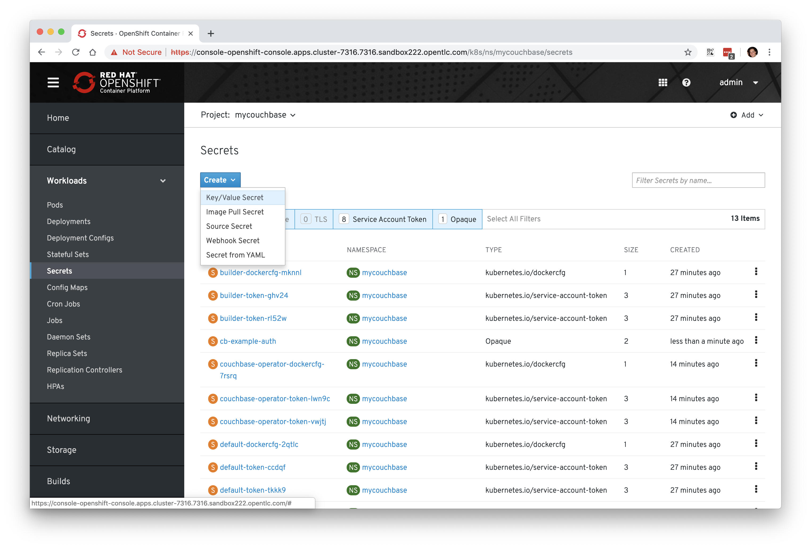
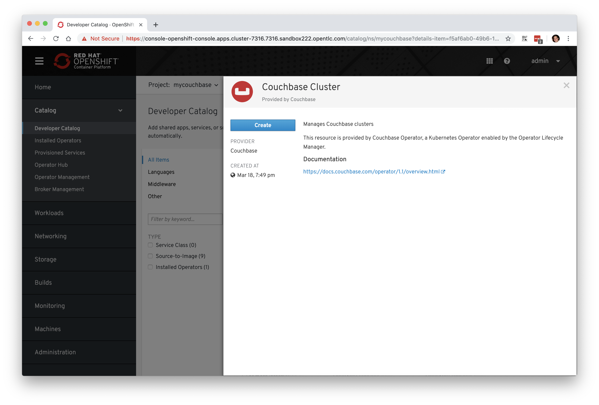
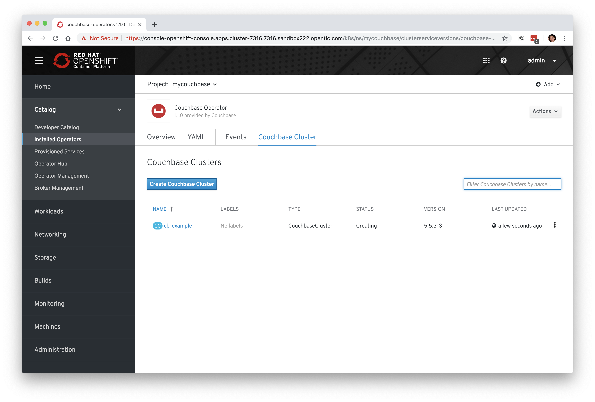
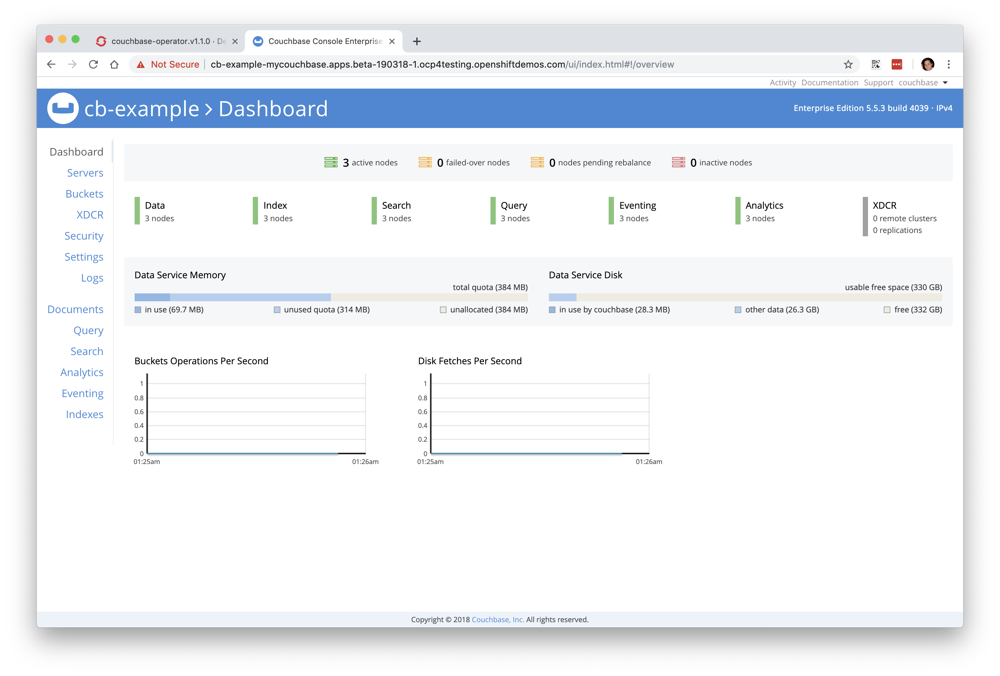
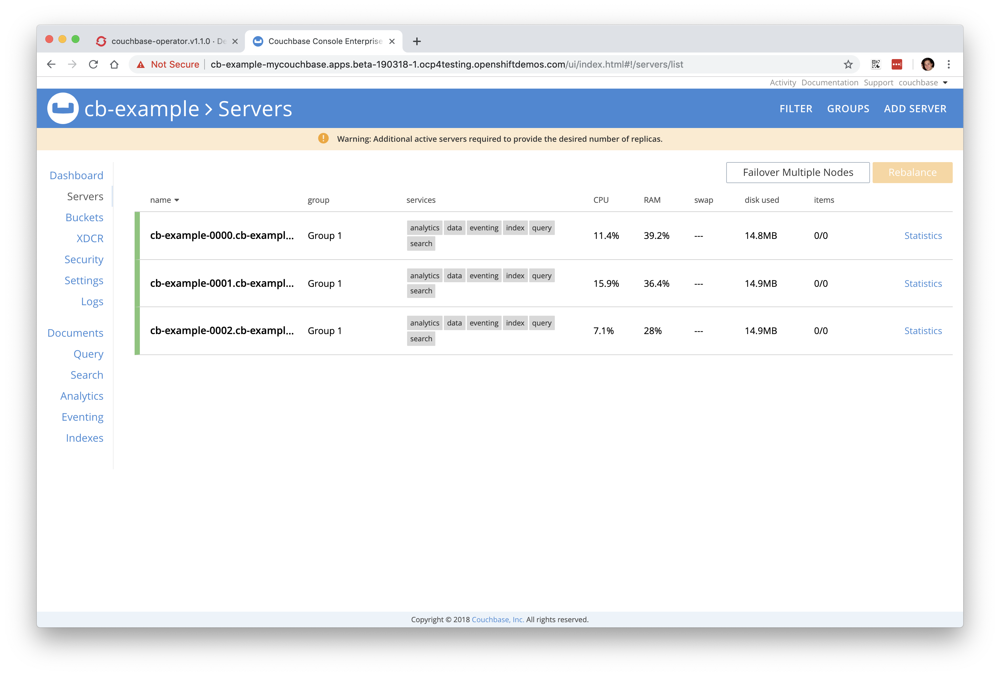
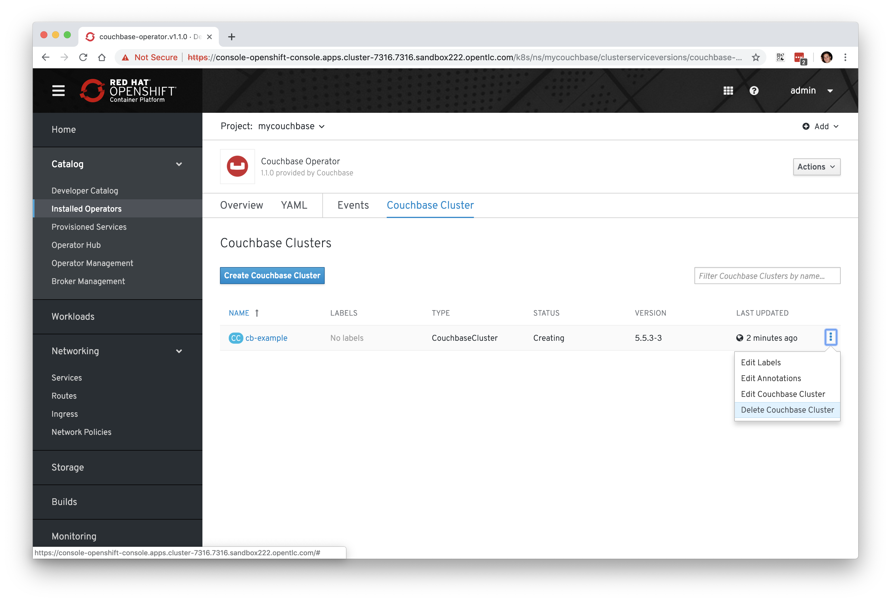

Firstly, welcome to the Red Hat Sales Kick Off 2019! The past few years have been an exciting time for both Red Hat and the OpenShift community; we've seen unprecedented interest and development in this new revolutionary technology and we're proud to be at the heart of it all. Red Hat is firmly committed to the future of OpenShift, Kubernetes, and the surrounding technologies; our goal is to continue to enhance the technology, make it more readily consumable and to enable our customers to be successful when using it.
We've prepared some materials to get you familiar with Red Hat OpenShift Container Platform 4.0, which is currently in a pre-release state (expected to be GA'd at Summit 2019 time frame as 4.1). This hands-on lab aims to get you, the attendees, a bit closer to Red Hat OpenShift Container Platform. It's comprised of a number of individual steps inside of this lab-guide that will run you through some of the more common tasks, such as investigation of the environment, application provisioning, network route creation, scaling the environment, and looking into over the air updates. We feel that giving you a hands-on overview of OpenShift will be a lot more beneficial than just delivering slideware. We want to make sure that you know how the components fit together, and how to use it. We will use a combination of command-line tools (oc) and interaction via the OpenShift Web Console.
Whilst you'll be asked to configure some fundamental components within OpenShift, you won't need to install OpenShift from scratch within this lab, we've provided a pre-installed environment with a multi-node configuration for each of you to use individually, which has been deployed via the new openshift-installer technology that was inspired by the Tectonic installer from the CoreOS acquisition. In the next steps you'll be walked through getting access to a dedicated environment that is just for you, and we'll start by exploring the environment.
If you have any problems at all or have any questions about Red Hat or our OpenShift offering, please put your hand-up and a lab moderator will be with you shortly to assist - we've asked many of our OpenShift experts to be here today, so please make use of their time. If you have printed materials, they're yours to take away with you, otherwise this online copy will be available for the foreseeable future; I hope that they'll be useful assets in your OpenShift endeavours.
You'll need to use your own laptop to connect into your (public cloud hosted) dedicated environment, and hopefully the WiFi will sustain so many connections. It's on this environment that you'll perform the later lab instructions, and you should only need a web-browser to complete all of the tasks, although some of you may prefer to also use your own built in terminal.
NOTE: Those of you completing this in China may not be able to use your own terminal sessions unless you're also connected to the Red Hat VPN, this is due to the restricted internet connectivity in the People's Republic of China. That's why we have a fall-back option of using the web-browser for everything, including the instructions where you need to use a terminal session; this will become more obvious later down the line.
To get started, we need to request your own dedicated session, for this we use a tool from GPTE called GuidGrabber. Open up your web-browser and click here (https://www.opentlc.com/gg/gg.cgi?profile=generic_sko). What you should see is as follows, noting that if there's more than one lab shown in the drop-down box ensure you select 'lab1 - OpenShift 4.0 Sandbox' and have entered the activation key 'sko2019', which you will need to do too:
This will allocate a pre-deployed session for your usage with a GUID that's used to uniquely identify your session. Here's an example below:
You'll see that my assigned lab GUID is 'dd83' and is used to uniquely identify my session, and is used as part of the connection address. There are a number of links that are displayed that we'll be using over the next few sections, e.g. a link to the OpenShift web-console along with credentials that you will need.
NOTE: If there are no credentials listed, use "admin" / "r3dh4t1!" for the username/password.
Next, let's login to the web-console and ensure that it's working as expected. Click on the link that says "OpenShift Master Console" from within the GuidGrabber webpage. After a couple of SSL errors (that you'll need to manually accept) you should be presented with the login page:
The environment takes around 20 minutes to power-up, and this should have already been done for you prior to the session starting, but don't be alarmed if you cannot connect in straight away, it may just require a few more minutes. Once it's up and running, proceed to login with the username and password that were provided to you once you requested your environment and you should hit the OpenShift console home page:
Now we're ready to proceed with the rest of our lab steps. If you had any problems getting access or if you have any questions, please feel free to ask any of the moderators at any time. If you lose your connection details you can return here at any time.
In this section we're going to both deploying our first application, but also creating a web-browser based terminal session hosted by the OpenShift cluster that we'll be interacting with. We're doing this for two reasons, firstly to give you an experience of deploying a basic OpenShift application but also to avoid any connectivity or client issues you may be facing, depending on your geographical location or your local system configurations. We have a dedicated image that we'll deploy that has been pre-configured with everything we'll need, let's deploy that now.
Assuming that you've already logged into your environment via the web-browser, follow these instructions to deploy the application:
On the left-hand side menu, select 'Workloads', and then select 'Pods'.
Ensure that you're in the 'default' project by selecting it from the drop down menu on the left of the 'pods' panel.
You should see that there's no current pods running in the 'default' project.
In the top-right, click the 'Add' drop-down menu and select 'Deploy Image' as shown here:
In this new pane, ensure that the 'Namespace' is also set to 'default'
Enter "quay.io/openshiftlabs/workshop-terminal:2.4.0" in the 'Image Name' box, noting that there's no "http://", enter exactly as shown here, without the quotes, and then select the magnifying glass to the right of the box, this will show you more information about the image.
Leave 'workshop-terminal' as the name for the image, we don't need to change that.
Scroll down a bit and provide an environment variable. We need to set "OC_VERSION" to be "4.0" here as shown below:
When you're done, click 'Deploy'
You will then be presented with a list of your applications, in there select 'workshop-terminal' and you will be able to watch the deployment and await the pod to start, as below.
Next we need to create a route so we can access this application from the outside of OpenShift (i.e. from the internet). On the left-hand side menu, select 'Networking' and then choose 'Routes'. In the new pane select 'Create Route' in the top-left.
Enter 'workshop-terminal' for the name of the route, leave the hostname and path the default, select 'workshop-terminal' from the list of services in the 'Service' menu, and select the only port in the 'Target Port' drop down (should be port 10080 --> 10080), like this:
When you're ready, click 'Create' at the bottom and it will create the route for us.
You will now be presented with a pane that shows the overview of the route that we requested:
In the top right hand side you will see the 'Location' which will be the routable URL that will provide access to our workshop terminal. Click on this and you should now see the in-browser terminal session that we can use (if preferred, or mandated due to connectivity issues):
Congratulations! You've just deployed your first application on OpenShift 4.0. You can jump into seeing more information about it by going into the 'Deployment Configs' menu from the 'Workloads' drop down on the main menu on the left-hand side. Feel free to have a play around and investigate some of the resources that have been created along with the logs from the deployment.
NOTE: With OpenShift's integration with Amazon Web Services, when we create a route through the API or web-console, Amazon's Route 53 DNS service is dynamically updated for us, part of the key work we're doing to standardise the user experience across multiple different underlying platforms by abstracting the underlying functionality and complexity.
Let's take some time to explore our new cluster. You now have two options, you can use your local terminal on your laptop, or you can use the browser-based terminal that we provisioned in the previous section. Due to connectivity challenges, especially in China, you may be forced to use the browser-based one, and for convenience our recommendation would be to use it. If you really want to configure your local client you can do so by using the following instructions to download the command line tooling. You should only do this if you don't want to use the browser-based terminal; make sure you run this on your local laptop and NOT within the web-browser.
For Linux:
$ wget https://mirror.openshift.com/pub/openshift-v3/clients/4.0.0-0.148.0/linux/oc.tar.gz
(...)
$ tar -zxvf oc.tar.gz
oc
$ export PATH=$PATH:$(pwd)
$ oc version
oc v4.0.0-0.148.0
kubernetes v1.11.0+8868a98a7b
features: Basic-Auth GSSAPI Kerberos SPNEGOFor MacOS:
$ wget https://mirror.openshift.com/pub/openshift-v3/clients/4.0.0-0.148.0/macosx/oc.tar.gz
(...)
$ tar -zxvf oc.tar.gz
x oc
$ export PATH=$PATH:$(pwd)
$ oc version
oc v4.0.0-0.148.0
kubernetes v1.11.0+8868a98a7b
features: Basic-Auth GSSAPI Kerberos SPNEGONOTE: For all remaining command line instructions below, either use your local system that you've downloaded the command line tooling on, or use the web-browser session we deployed earlier.
Let's now configure our command line tooling to point to our new cluster. You will find all of the connection details as well as authentication credentials on the GuidGrabber page from earlier where you acquired your unique session information. Below you'll need to enter the API URI, which will be shown as the "Openshift API for command line 'oc' client" on the GuidGrabber page:
$ oc login --server <your API URI>
The server uses a certificate signed by an unknown authority.
You can bypass the certificate check, but any data you send to the server could be intercepted by others.
Use insecure connections? (y/n): y
Authentication required for https://api.beta-190305-1.ocp4testing.openshiftdemos.com:6443 (openshift)
Username: <your username>
Password: <your password>
Login successful.
(...)
Using project "default".
Welcome! See 'oc help' to get started.You can now check that your config has been written successfully:
$ cat ~/.kube/config
apiVersion: v1
clusters:
- cluster:
insecure-skip-tls-verify: true
server: https://api.beta-190305-1.ocp4testing.openshiftdemos.com:6443
(...)NOTE: Your output will vary slightly from the above, you'll just need to make sure to use the API endpoint and credentials that you were provided with.
Now that your cluster is installed, you will have access to the web console and can use the CLI. Below are some command-line exercises to explore the cluster.
The default installation behavior creates 6 nodes: 3 masters and 3 "worker" application/compute nodes. You can view them with:
$ oc get nodes -o wide
NAME STATUS ROLES AGE VERSION INTERNAL-IP EXTERNAL-IP OS-IMAGE KERNEL-VERSION CONTAINER-RUNTIME
ip-10-0-137-104.ec2.internal Ready worker 24h v1.12.4+5dc94f3fda 10.0.137.104 <none> Red Hat CoreOS 400.7.20190301.0 3.10.0-957.5.1.el7.x86_64 cri-o://1.12.6-1.rhaos4.0.git2f0cb0d.el7
ip-10-0-140-138.ec2.internal Ready master 24h v1.12.4+5dc94f3fda 10.0.140.138 <none> Red Hat CoreOS 400.7.20190301.0 3.10.0-957.5.1.el7.x86_64 cri-o://1.12.6-1.rhaos4.0.git2f0cb0d.el7
ip-10-0-158-222.ec2.internal Ready master 24h v1.12.4+5dc94f3fda 10.0.158.222 <none> Red Hat CoreOS 400.7.20190301.0 3.10.0-957.5.1.el7.x86_64 cri-o://1.12.6-1.rhaos4.0.git2f0cb0d.el7
ip-10-0-159-179.ec2.internal Ready worker 24h v1.12.4+5dc94f3fda 10.0.159.179 <none> Red Hat CoreOS 400.7.20190301.0 3.10.0-957.5.1.el7.x86_64 cri-o://1.12.6-1.rhaos4.0.git2f0cb0d.el7
ip-10-0-168-43.ec2.internal Ready master 24h v1.12.4+5dc94f3fda 10.0.168.43 <none> Red Hat CoreOS 400.7.20190301.0 3.10.0-957.5.1.el7.x86_64 cri-o://1.12.6-1.rhaos4.0.git2f0cb0d.el7
ip-10-0-171-135.ec2.internal Ready worker 24h v1.12.4+5dc94f3fda 10.0.171.135 <none> Red Hat CoreOS 400.7.20190301.0 3.10.0-957.5.1.el7.x86_64 cri-o://1.12.6-1.rhaos4.0.git2f0cb0d.el7If you want to see the various applied labels, you can also do:
$ oc get nodes --show-labels
NAME STATUS ROLES AGE VERSION LABELS
ip-10-0-137-104.ec2.internal Ready worker 23h v1.12.4+5dc94f3fda beta.kubernetes.io/arch=amd64,beta.kubernetes.io/instance-type=m4.large,beta.kubernetes.io/os=linux,failure-domain.beta.kubernetes.io/region=us-east-1,failure-domain.beta.kubernetes.io/zone=us-east-1a,kubernetes.io/hostname=ip-10-0-137-104,node-role.kubernetes.io/worker=
ip-10-0-140-138.ec2.internal Ready master 23h v1.12.4+5dc94f3fda beta.kubernetes.io/arch=amd64,beta.kubernetes.io/instance-type=m4.xlarge,beta.kubernetes.io/os=linux,failure-domain.beta.kubernetes.io/region=us-east-1,failure-domain.beta.kubernetes.io/zone=us-east-1a,kubernetes.io/hostname=ip-10-0-140-138,node-role.kubernetes.io/master=
ip-10-0-158-222.ec2.internal Ready master 23h v1.12.4+5dc94f3fda beta.kubernetes.io/arch=amd64,beta.kubernetes.io/instance-type=m4.xlarge,beta.kubernetes.io/os=linux,failure-domain.beta.kubernetes.io/region=us-east-1,failure-domain.beta.kubernetes.io/zone=us-east-1b,kubernetes.io/hostname=ip-10-0-158-222,node-role.kubernetes.io/master=
ip-10-0-159-179.ec2.internal Ready worker 23h v1.12.4+5dc94f3fda beta.kubernetes.io/arch=amd64,beta.kubernetes.io/instance-type=m4.large,beta.kubernetes.io/os=linux,failure-domain.beta.kubernetes.io/region=us-east-1,failure-domain.beta.kubernetes.io/zone=us-east-1b,kubernetes.io/hostname=ip-10-0-159-179,node-role.kubernetes.io/worker=
ip-10-0-168-43.ec2.internal Ready master 23h v1.12.4+5dc94f3fda beta.kubernetes.io/arch=amd64,beta.kubernetes.io/instance-type=m4.xlarge,beta.kubernetes.io/os=linux,failure-domain.beta.kubernetes.io/region=us-east-1,failure-domain.beta.kubernetes.io/zone=us-east-1c,kubernetes.io/hostname=ip-10-0-168-43,node-role.kubernetes.io/master=
ip-10-0-171-135.ec2.internal Ready worker 23h v1.12.4+5dc94f3fda beta.kubernetes.io/arch=amd64,beta.kubernetes.io/instance-type=m4.large,beta.kubernetes.io/os=linux,failure-domain.beta.kubernetes.io/region=us-east-1,failure-domain.beta.kubernetes.io/zone=us-east-1c,kubernetes.io/hostname=ip-10-0-171-135,node-role.kubernetes.io/worker=For reference, labels are used as a mechanism to tag certain information onto a node, or a set of nodes, that can help you identify your systems, e.g. by operating system, system architecture, specification, location of the system (e.g. region), it's hostname, etc. They can also help with application scheduling, e.g. make sure that my application (or pod) resides on a specific system type. The labels shown above are utilising the default labels, but it's possible to set some custom labels in the form of a key-value pair.
The cluster version operator is the core of what defines an OpenShift deployment . The cluster version operator pod(s) contains the set of manifests which are used to deploy, updated, and/or manage the OpenShift services in the cluster. This operator ensures that the other services, also deployed as operators, are at the version which matches the release definition and takes action to remedy discrepancies when necessary.
$ oc get deployments -n openshift-cluster-version
NAME DESIRED CURRENT UP-TO-DATE AVAILABLE AGE
cluster-version-operator 1 1 1 1 2hYou can also view the current version of the OpenShift cluster and give you a high-level indication of the status:
$ oc get clusterversion
NAME VERSION AVAILABLE PROGRESSING SINCE STATUS
version 4.0.0-0.7 True False 28h Cluster version is 4.0.0-0.7If you want to review a list of operators that the cluster version operator is controlling, along with their status, you can ask for a list of the cluster operators:
$ oc get clusteroperator
NAME VERSION AVAILABLE PROGRESSING FAILING SINCE
cluster-autoscaler True False False 29h
cluster-storage-operator True False False 29h
console True False False 28h
dns True False False 29h
image-registry True False False 29h
ingress True False False 28h
kube-apiserver True False False 29h
kube-controller-manager True False False 29h
kube-scheduler True False False 29h
machine-api True False False 29h
machine-config True False False 17h
marketplace-operator True False False 29h
monitoring True False False 80m
network True False False 81m
node-tuning True False False 28h
openshift-apiserver True False False 81m
openshift-authentication True False False 29h
openshift-cloud-credential-operator True False False 29h
openshift-controller-manager True False False 29h
openshift-samples True False False 29h
operator-lifecycle-manager True False False 29hOr a more comprehensive way of getting a list of operators running on the cluster, along with the link to the code, the documentation, and the commit that provided the functionality is as follows:
$ oc adm release info --commits
Name: 4.0.0-0.7
Digest: sha256:641c0e4f550af59ec20349187a31751ae5108270f13332d1771935520ebf34c1
Created: 2019-03-05 18:33:12 +0000 GMT
OS/Arch: linux/amd64
Manifests: 248
Release Metadata:
Version: 4.0.0-0.7
Upgrades: 4.0.0-0.6
Metadata:
description: Beta 2
Images:
NAME REPO COMMIT
aws-machine-controllers https://github.com/openshift/cluster-api-provider-aws 17d5aacdeb2df8898b20286970ace7d42f0c376a
cli https://github.com/openshift/ose e268aada53a27b7cba51e4267d035dad207a1d8a
cloud-credential-operator https://github.com/openshift/cloud-credential-operator 97e00568622e2a82cde1e964be7ea7c37fe85b4f
cluster-authentication-operator https://github.com/openshift/cluster-authentication-operator 88650bd64069ed79a411098b481ac2416526ce0e
cluster-autoscaler https://github.com/openshift/kubernetes-autoscaler e1a6a0960a100132abc5f8398ff73dbb0f45ae28
cluster-autoscaler-operator https://github.com/openshift/cluster-autoscaler-operator 0c2284a7a7cff0e123ace8d5e43337e4cc9739e9
cluster-bootstrap https://github.com/openshift/cluster-bootstrap 90a38fd8d9dc0b0a61214f079fd4734b034bae0c
cluster-config-operator https://github.com/openshift/cluster-config-operator aa1805e73138deabbfa57772170f310e2f3097cd
cluster-dns-operator https://github.com/openshift/cluster-dns-operator e4aa0a50f865e8399aeeccaf8c24f8d891cd67c2
cluster-image-registry-operator https://github.com/openshift/cluster-image-registry-operator 689aa65b90644aead5b579acce2725a08bd70f93
cluster-ingress-operator https://github.com/openshift/cluster-ingress-operator e53dfea77b35656f105c41d5c1a3bcb2bc6fbcba
cluster-kube-apiserver-operator https://github.com/openshift/cluster-kube-apiserver-operator 4c34fbfd2b4382e366d45f5e9acd07fb8da1ee9d
cluster-kube-controller-manager-operator https://github.com/openshift/cluster-kube-controller-manager-operator 52a2f710ae90f0624c47040bf6d9b0ad55538de0
cluster-kube-scheduler-operator https://github.com/openshift/cluster-kube-scheduler-operator c68e8b1af27033dec9ca9cd36c831b0796cef798
cluster-machine-approver https://github.com/openshift/cluster-machine-approver c4ba3024437a348a03ee1459cdf9823d7c6de4a8
cluster-monitoring-operator https://github.com/openshift/cluster-monitoring-operator 25fd008f1fb34cc27332fcc59f6821ef01c306a6
cluster-network-operator https://github.com/openshift/cluster-network-operator b13c79c1ae6290bbc472c0ac260855e26d71dfd3
cluster-node-tuned https://github.com/openshift/openshift-tuned b580cb6f52a0e352aebbe0e368d5ec020230c532
cluster-node-tuning-operator https://github.com/openshift/cluster-node-tuning-operator 900d59d3aa7a59aa31318bc25efc5df1e994e4b9
cluster-openshift-apiserver-operator https://github.com/openshift/cluster-openshift-apiserver-operator 0a65fe40a74cfc6114fdaa30e2b2c24924509cda
cluster-openshift-controller-manager-operator https://github.com/openshift/cluster-openshift-controller-manager-operator 6656fd894295a9924c6bf5de244586705508e595
cluster-samples-operator https://github.com/openshift/cluster-samples-operator 204cf2ba6a3a12d2344f69d19f539ebc31f39683
cluster-storage-operator https://github.com/openshift/cluster-storage-operator b850242280b7ef2cf7631952229c0a438ec39e64
cluster-svcat-apiserver-operator https://github.com/openshift/cluster-svcat-apiserver-operator 547648cb7b3f2a0d8f049f680c18ac66cd339b3f
cluster-svcat-controller-manager-operator https://github.com/openshift/cluster-svcat-controller-manager-operator 9261f420a3db9556606c8ee0980a5e02a8f28d89
cluster-version-operator https://github.com/openshift/cluster-version-operator bcf8bf290bc7d0090769b4722831dbb157b75d01
configmap-reloader https://github.com/openshift/configmap-reload 3c2f85724078cbf7ffab56886ff32d677c386afe
console https://github.com/openshift/console 24942e86dd5bef0b17c1e33bfcd386b450c49b19
console-operator https://github.com/openshift/console-operator 8665600274308fbda0f66e7ed8a0e5cc5c0bb7d9
container-networking-plugins-supported https://github.com/openshift/ose-containernetworking-plugins f6a58dcec62ca740305a58a0a6b008c5e57b8943
container-networking-plugins-unsupported https://github.com/openshift/ose-containernetworking-plugins f6a58dcec62ca740305a58a0a6b008c5e57b8943
coredns https://github.com/openshift/coredns fbcb8252a1bab3d32ecf2dd3307f798aacd0280e
deployer https://github.com/openshift/ose e268aada53a27b7cba51e4267d035dad207a1d8a
docker-builder https://github.com/openshift/builder 1a77d837d8d74d5dcb6f8afcadb082629b04883e
docker-registry https://github.com/openshift/image-registry afcc7daa5eeeb6a77754ae86decefade83314189
etcd https://github.com/openshift/etcd a0e62b48f8db8572c129fa3d3507c7ce118ab650
grafana https://github.com/openshift/grafana 2ea5517e5d33531ee8b838c70666e484a79cd49d
haproxy-router https://github.com/openshift/router 80b8c3d8e67e7549c59957421db2a5d344d8796a
hyperkube https://github.com/openshift/ose e268aada53a27b7cba51e4267d035dad207a1d8a
hypershift https://github.com/openshift/ose e268aada53a27b7cba51e4267d035dad207a1d8a
installer https://github.com/openshift/installer c8b3b5532694c7713efe300a636108174d623c52
jenkins https://github.com/openshift/jenkins 6b596492c09144c37bb484393b977136783d91bd
jenkins-agent-maven https://github.com/openshift/jenkins 6b596492c09144c37bb484393b977136783d91bd
jenkins-agent-nodejs https://github.com/openshift/jenkins 6b596492c09144c37bb484393b977136783d91bd
k8s-prometheus-adapter https://github.com/openshift/k8s-prometheus-adapter 815fa76bdbccfd5ee6da8f9fa45d039c4342dcdb
kube-rbac-proxy https://github.com/openshift/kube-rbac-proxy 3f271e0951f18276ec54e8eac936725d6d68e073
kube-state-metrics https://github.com/openshift/kube-state-metrics 2ab51c9f341799107ffbf7f373ab55254dc044d0
libvirt-machine-controllers https://github.com/openshift/cluster-api-provider-libvirt a06e49585f2cd716ae642c40701c67f17b747553
machine-api-operator https://github.com/openshift/machine-api-operator 050a65a2bdabcc2c2f17036de967c6bcee6d6a48
machine-config-controller https://github.com/openshift/machine-config-operator f5ea7118453804f30b6da859e3a8f7a924e4296d
machine-config-daemon https://github.com/openshift/machine-config-operator f5ea7118453804f30b6da859e3a8f7a924e4296d
machine-config-operator https://github.com/openshift/machine-config-operator f5ea7118453804f30b6da859e3a8f7a924e4296d
machine-config-server https://github.com/openshift/machine-config-operator f5ea7118453804f30b6da859e3a8f7a924e4296d
machine-os-content
multus-cni https://github.com/openshift/ose-multus-cni 61f9e0886370ea5f6093ed61d4cfefc6dadef582
must-gather https://github.com/openshift/must-gather 8286a5dc432e339dc79c75044424cd9c89dc634b
node https://github.com/openshift/ose e268aada53a27b7cba51e4267d035dad207a1d8a
oauth-proxy https://github.com/openshift/oauth-proxy 40c12481bfdd3e87d133736351c907000d5759b2
openstack-machine-controllers https://github.com/openshift/cluster-api-provider-openstack 9e913e83ca639e7f6e10fdffa8445f504b101f3c
operator-lifecycle-manager https://github.com/operator-framework/operator-lifecycle-manager 04d2513ec9932f20bec57456ba9b4deebd733f71
operator-marketplace https://github.com/operator-framework/operator-marketplace aabac93da42773f29c4230bd8b7906facc6c42f9
operator-registry https://github.com/operator-framework/operator-registry 0531400c661ef7088d71b86ff5f52892f9407a1a
pod https://github.com/openshift/images 2f60da39a9d2e5cc00293b8ec7ad559fcd32446a
prom-label-proxy https://github.com/openshift/prom-label-proxy 46423f9d573c7d53f5727de1e2db095ae039da06
prometheus https://github.com/openshift/prometheus 6e5fb5dcb6a709bd20ea68cddc1abfcceb8a487d
prometheus-alertmanager https://github.com/openshift/prometheus-alertmanager 4617d5502332dc41c9c885cc12ecde5069191f73
prometheus-config-reloader https://github.com/openshift/prometheus-operator f8a0aa170bf81ef70e16875053573a037461042d
prometheus-node-exporter https://github.com/openshift/node_exporter f248b582878226c8a8cd650223cf981cc556eb44
prometheus-operator https://github.com/openshift/prometheus-operator f8a0aa170bf81ef70e16875053573a037461042d
service-catalog https://github.com/openshift/service-catalog b24ffd6f826fe094a49afc04a5d62ab65490bb37
service-serving-cert-signer https://github.com/openshift/service-serving-cert-signer 309242162ed5bcf9398fca0ba9418244ec7c6808
setup-etcd-environment https://github.com/openshift/machine-config-operator f5ea7118453804f30b6da859e3a8f7a924e4296d
telemeter https://github.com/openshift/telemeter 0fdf2d009d884ba3f1180d2b5f1531794c80b8d1
tests https://github.com/openshift/ose e268aada53a27b7cba51e4267d035dad207a1d8aYou can also rsh (remote shell access) into the running Operator and see the
various manifests associated with the installed release of OpenShift:
$ oc rsh -n openshift-cluster-version deployments/cluster-version-operatorThen to list the available manifests:
sh-4.2# ls -l /release-manifests/
total 836
-r--r--r--. 1 root root 171 Jan 15 04:04 0000_07_cluster-network-operator_00_namespace.yaml
-r--r--r--. 1 root root 381 Jan 15 04:04 0000_07_cluster-network-operator_01_crd.yaml
-r--r--r--. 1 root root 316 Jan 15 04:04 0000_07_cluster-network-operator_02_rbac.yaml
-r--r--r--. 1 root root 1904 Jan 15 04:04 0000_07_cluster-network-operator_03_daemonset.yaml
-r--r--r--. 1 root root 960 Jan 15 04:04 0000_08_cluster-dns-operator_00-cluster-role.yaml
-r--r--r--. 1 root root 298 Jan 15 04:04 0000_08_cluster-dns-operator_00-custom-resource-definition.yaml
-r--r--r--. 1 root root 198 Jan 15 04:04 0000_08_cluster-dns-operator_00-namespace.yaml
(...)You will see a number of .yaml files in this directory; these are manifests
that describe each of the operators and how they're applied. Feel free to take a
look at some of these to give you an idea of what it's doing.
sh4.2# cat /release-manifests/0000_70_console-operator_00-crd.yaml
apiVersion: apiextensions.k8s.io/v1beta1
kind: CustomResourceDefinition
metadata:
name: consoles.console.openshift.io
spec:
group: console.openshift.io
names:
kind: Console
listKind: ConsoleList
plural: consoles
singular: console
scope: Namespaced
version: v1alpha1
sh4.2# exit
exitNOTE: Don't forget to
exitfrom yourrshsession before continuing...
If you want to look at what the Cluster Operator has done since it was launched, you can execute the following:
$ oc logs deployments/cluster-version-operator -n openshift-cluster-version > operatorlog.txt
$ ls operatorlog.txt
I0306 10:28:10.548869 1 start.go:71] ClusterVersionOperator v4.0.0-0.139.0.0-dirty
I0306 10:28:10.601159 1 start.go:197] Using in-cluster kube client config
I0306 10:28:10.667401 1 leaderelection.go:185] attempting to acquire leader lease openshift-cluster-version/version...
(...)The operator's log is extremely long, so it is recommended that you redirect
it to a file instead of trying to look at it directly with the logs command.
With OpenShift 4.0+, we now have the ability to dynamically scale the cluster size through OpenShift itself.
In this exercise we're going to manually add worker nodes to our cluster:
If you're not already logged in, go to the OpenShift web console and login with admin (or your admin
username if different)
Browse to Machines on the left-hand side-bar, and click Machine Sets.
On the Machine Sets page, select openshift-machine-api from the Project
dropdown and you should see the machine sets:
Select one of the machine sets in the list by clicking on the name, e.g. "beta-190305-1-79tf5-worker-us-east-1a" (yours will be slightly different)
Select a worker set to scale by clicking it.
NOTE: Depending on the AWS region you chose, you may have several worker machine sets that can be scaled, some of which are at a scale of 0. It does not matter which set you choose for this example.
In the Actions pull down menu (on the right hand side), select Edit Count
Enter '3' and click Save
At this point you can click the Machines tab in this Machine Set display
and see the allocated machines. The Overview tab will let you know when the
machines become ready. If you click Machine Sets under Machines on the
left-hand side again, you will also see the status of the machines in the set:
You may need to wait a few minutes before the machines become ready. If you click Machine Sets under Machines again, you will also see the status of the machines in the set.
It will take several minutes for the new machines to become ready. In the background additional EC2 instances are being provisioned and then registered and configured to participate in the cluster, so yours may still show 1/3.
You can also view this in the CLI:
$ oc get machinesets -n openshift-machine-api
NAME DESIRED CURRENT READY AVAILABLE AGE
beta-190305-1-79tf5-worker-us-east-1a 3 3 3 3 23h
beta-190305-1-79tf5-worker-us-east-1b 1 1 1 1 23h
beta-190305-1-79tf5-worker-us-east-1c 1 1 1 1 23h
beta-190305-1-79tf5-worker-us-east-1d 0 0 23h
beta-190305-1-79tf5-worker-us-east-1e 0 0 23h
beta-190305-1-79tf5-worker-us-east-1f 0 0 23h
$ oc get nodes
NAME STATUS ROLES AGE VERSION
ip-10-0-132-138.ec2.internal Ready worker 2m6s v1.12.4+5dc94f3fda
ip-10-0-137-104.ec2.internal Ready worker 23h v1.12.4+5dc94f3fda
ip-10-0-140-138.ec2.internal Ready master 24h v1.12.4+5dc94f3fda
ip-10-0-140-67.ec2.internal Ready worker 2m6s v1.12.4+5dc94f3fda
ip-10-0-158-222.ec2.internal Ready master 24h v1.12.4+5dc94f3fda
ip-10-0-159-179.ec2.internal Ready worker 23h v1.12.4+5dc94f3fda
ip-10-0-168-43.ec2.internal Ready master 24h v1.12.4+5dc94f3fda
ip-10-0-171-135.ec2.internal Ready worker 23h v1.12.4+5dc94f3fdaYou'll note that some of these systems 'age' will be much newer than some of the
others, these are the ones that will have just been added in. Before continuing,
scale back down by editing the count to whatever it was previously for the
Machine Set, i.e. return it to '1' node.
The default installation currently creates two routers, but they are on the same host. This is a known bug. It is possible that when you scale down your cluster that you may inadvertently end up removing the node where the router was running, which will temporarily make the console and other resources unavailable. If you suddenly lose access to the web console, wait a few moments, and then check to see the status of the router pod with:
$ oc get pod -n openshift-ingress
NAME READY STATUS RESTARTS AGE
router-default-dffd8548-6g4hz 1/1 Running 0 23h
router-default-dffd8548-vxtt8 1/1 Running 0 23hIf there is no router pod, or if it is in the ContainerCreating state, wait
a little longer.
You can alter the Machine Set count in several ways in the web UI console,
but you can also perform the same operation via the CLI by using the oc edit
command on the machineset in the openshift-machine-api project-
$ oc edit machineset -n openshift-machine-api
(opens in vi)You will see the following text:
# Please edit the object below. Lines beginning with a '#' will be ignored,
# and an empty file will abort the edit. If an error occurs while saving this file will be
# reopened with the relevant failures.
apiVersion: v1
items:
- apiVersion: machine.openshift.io/v1beta1
kind: MachineSet
metadata:
creationTimestamp: 2019-03-05T16:38:39Z
generation: 3
labels:
machine.openshift.io/cluster-api-cluster: beta-190305-1-79tf5
machine.openshift.io/cluster-api-machine-role: worker
machine.openshift.io/cluster-api-machine-type: worker
name: beta-190305-1-79tf5-worker-us-east-1a
namespace: openshift-machine-api
resourceVersion: "909452"
selfLink: /apis/machine.openshift.io/v1beta1/namespaces/openshift-machine-api/machinesets/beta-190305-1-79tf5-worker-us-east-1a
uid: 21236e24-3f65-11e9-b848-12efc11fb292
spec:
replicas: 1 <---------------
selector:
matchLabels:
machine.openshift.io/cluster-api-cluster: beta-190305-1-79tf5
machine.openshift.io/cluster-api-machineset: beta-190305-1-79tf5-worker-us-east-1a
template:
(...)NOTE: If you're uncomfortable with vi(m) you can use your favourite editor by specifying
EDITOR=<your choice>before theoccommand.
The above is just an excerpt of the entire machine set configuration - each
machine set is listed in this file, but you'll need to change just one of the
sets. In the above output you'll see an line with an arrow to signify where you
can update the count - you'll need to change the replica: 1 to the count of
your choice. For this example I'd recommend that you set it to '2'. To save your
changes simply save and quit from your editor. OpenShift will now patch the
configuration. You should see that your modified machine set (depending on which
one you edited) will be confirmed:
machineset.machine.openshift.io/beta-190305-1-79tf5-worker-us-east-1a edited
machineset.machine.openshift.io/beta-190305-1-79tf5-worker-us-east-1b skipped
machineset.machine.openshift.io/beta-190305-1-79tf5-worker-us-east-1c skipped
machineset.machine.openshift.io/beta-190305-1-79tf5-worker-us-east-1d skipped
machineset.machine.openshift.io/beta-190305-1-79tf5-worker-us-east-1e skipped
machineset.machine.openshift.io/beta-190305-1-79tf5-worker-us-east-1f skippedOnce that has been changed, you can view the outcome here:
$ oc get machinesets -n openshift-machine-api
NAME DESIRED CURRENT READY AVAILABLE AGE
beta-190305-1-79tf5-worker-us-east-1a 2 2 2 2 23h
beta-190305-1-79tf5-worker-us-east-1b 1 1 1 1 23h
beta-190305-1-79tf5-worker-us-east-1c 1 1 1 1 23h
beta-190305-1-79tf5-worker-us-east-1d 0 0 23h
beta-190305-1-79tf5-worker-us-east-1e 0 0 23h
beta-190305-1-79tf5-worker-us-east-1f 0 0 23hAgain, before you move forward, return this count back to how it was before, using the same method as above.
OpenShift can automatically scale the infrastructure based on workload provided there is a configuration specified to do so. Before we begin, ensure that your cluster is back to having three nodes running:
$ oc get machinesets -n openshift-machine-api
NAME DESIRED CURRENT READY AVAILABLE AGE
beta-190305-1-79tf5-worker-us-east-1a 1 1 1 1 24h
beta-190305-1-79tf5-worker-us-east-1b 1 1 1 1 24h
beta-190305-1-79tf5-worker-us-east-1c 1 1 1 1 24h
beta-190305-1-79tf5-worker-us-east-1d 0 0 24h
beta-190305-1-79tf5-worker-us-east-1e 0 0 24h
beta-190305-1-79tf5-worker-us-east-1f 0 0 24hMachineAutoScalerNext, configure a MachineAutoScaler - you'll need to fetch the following YAML
file:
$ wget https://raw.githubusercontent.com/openshift/training/master/assets/machine-autoscale-example.yamlThe file has the following contents:
kind: List
metadata: {}
apiVersion: v1
items:
- apiVersion: "autoscaling.openshift.io/v1alpha1"
kind: "MachineAutoscaler"
metadata:
generateName: autoscale-<aws-region-az>-
namespace: "openshift-machine-api"
spec:
minReplicas: 1
maxReplicas: 4
scaleTargetRef:
apiVersion: machine.openshift.io/v1beta1
kind: MachineSet
name: <clusterid>-worker-<aws-region-az>
- apiVersion: "autoscaling.openshift.io/v1alpha1"
kind: "MachineAutoscaler"
metadata:
generateName: autoscale-<aws-region-az>-
namespace: "openshift-machine-api"
spec:
minReplicas: 1
maxReplicas: 4
scaleTargetRef:
apiVersion: machine.openshift.io/v1beta1
kind: MachineSet
name: <clusterid>-worker-<aws-region-az>
- apiVersion: "autoscaling.openshift.io/v1alpha1"
kind: "MachineAutoscaler"
metadata:
generateName: autoscale-<aws-region-az>-
namespace: "openshift-machine-api"
spec:
minReplicas: 1
maxReplicas: 4
scaleTargetRef:
apiVersion: machine.openshift.io/v1beta1
kind: MachineSet
name: <clusterid>-worker-<aws-region-az>When you looked at the MachineSets with the CLI, you noticed that they all
had the format of:
<clusterid>-worker-<aws-region-az>MachineAutoscaler resources must be defined for each region-AZ that you want
to autoscale. Using the example output and MachineSets above, and selecting
"us-east-1a" as the region we're going to autoscale into, you would need
to modify the YAML file to look like the following:
...
apiVersion: "autoscaling.openshift.io/v1alpha1"
kind: "MachineAutoscaler"
metadata:
generateName: autoscale-us-east-1a-
namespace: "openshift-machine-api"
spec:
minReplicas: 1
maxReplicas: 4
scaleTargetRef:
apiVersion: machine.openshift.io/v1beta1
kind: MachineSet
name: beta-190305-1-79tf5-worker-us-east-1a
...To ensure you make no mistakes:
$ export CLUSTER_NAME=$(oc get machinesets -n openshift-machine-api | awk -F'-worker-' 'NR>1{print $1;exit;}')
$ export REGION_NAME=us-east-1a
$ sed -i s/\<aws-region-az\>/$REGION_NAME/g machine-autoscale-example.yaml
$ sed -i s/\<clusterid\>/$CLUSTER_NAME/g machine-autoscale-example.yamlNOTE: If you aren't deployed into this region, or don't want to use us-east-1a, adapt the instructions to suit. If you're at the APAC SKO this is ap-southeast-1
Make sure that you properly modify both generateName and name. Note
which one has the <clusterid> and which one does not. Note that
generateName has a trailing hyphen. You can specify the minimum and maximum
quantity of nodes that are allowed to be created by adjusting the
minReplicas and maxReplicas.
You do not have to define a MachineAutoScaler for each MachineSet. But
remember that each MachineSet corresponds to an AWS region/AZ. So, without
having multiple MachineAutoScalers, you could end up with a cluster fully
scaled out in a single AZ. If that's what you're after, it's fine. However if
AWS has a problem in that AZ, you run the risk of losing a large portion of
your cluster.
NOTE: You should probably choose a small-ish number for
maxReplicas. The next lab will autoscale the cluster up to that maximum. You're paying for the EC2 instances.**
Once the file has been modified appropriately, you can now create the autoscaler:
$ oc create -f machine-autoscale-example.yaml -n openshift-machine-api
machineautoscaler.autoscaling.openshift.io/autoscale-us-east-1a-t6m9k created
machineautoscaler.autoscaling.openshift.io/autoscale-us-east-1a-vr59k created
machineautoscaler.autoscaling.openshift.io/autoscale-us-east-1a-zkt5t createdClusterAutoscalerNext we need to define a ClusterAutoscaler, this configures some boundaries
and behaviors for how the cluster will autoscale. An example definition file
can be found at:
https://raw.githubusercontent.com/openshift/training/master/assets/cluster-autoscaler.yaml
This definition is set for a maximum of 20 workers, but we need to reduce that with our labs. Remember, we are paying for the EC2 instances. Let's first download that file:
$ wget https://raw.githubusercontent.com/openshift/training/master/assets/cluster-autoscaler.yaml
(...)Now modify the max number of replicas:
$ sed -i s/20/10/g cluster-autoscaler.yamlNext, we can simply create the ClusterAutoscaler with the following command:
$ oc create -f cluster-autoscaler.yaml
clusterautoscaler.autoscaling.openshift.io/default createdNOTE: The
ClusterAutoscaleris not a namespaced resource -- it exists at the cluster scope.
JobThe following example YAML file defines a Job:
https://raw.githubusercontent.com/openshift/training/master/assets/job-work-queue.yaml
It will produce a massive load that the cluster cannot handle, and will force
the autoscaler to take action (up to the maxReplicas defined in your
ClusterAutoscaler YAML).
NOTE: If you did not scale down your machines earlier, you may have too much capacity to trigger an autoscaling event. Make sure you have no more than 3 total workers before continuing.
Create a project to hold the resources for the Job, and switch into it:
$ oc adm new-project autoscale-example && oc project autoscale-example
Created project autoscale-example
Now using project "autoscale-example" on server "https://api.beta-190305-1.ocp4testing.openshiftdemos.com:6443".In the OpenShift web console, click Monitoring and then click Dashboards.
This will open a new browser tab for Grafana. You will also get a certificate
error similar to the first time you logged in. This is because Grafana has
its own SSL certificate. You will then see a login button. Grafana is
configured to use an OpenShift user and inherits permissions of that user for
accessing cluster information. This happens to be the user you're already
logged into the web console with.
Finally, allow the permissions, and then you will see the Grafana homepage.
Click the dropdown on Home and choose Kubernetes / Compute Resources /
Cluster. Leave this browser window open while you start the Job so that
you can observe the CPU utilization of the cluster rise:
Now we're ready to create the Job:
$ oc create -n autoscale-example -f https://raw.githubusercontent.com/openshift/training/master/assets/job-work-queue.yaml
job.batch/work-queue-qncs2 createdYou will see a note that the Job was created. It will create a lot of Pods:
$ oc get pod -n autoscale-example
NAME READY STATUS RESTARTS AGE
work-queue-qncs2-26x9c 0/1 Pending 0 33s
work-queue-qncs2-28h6r 0/1 Pending 0 33s
work-queue-qncs2-2tdz9 0/1 Pending 0 33s
work-queue-qncs2-526hl 0/1 Pending 0 33s
work-queue-qncs2-55nr7 0/1 Pending 0 33s
work-queue-qncs2-5d98k 0/1 Pending 0 33s
work-queue-qncs2-7pd5p 0/1 Pending 0 31s
work-queue-qncs2-8k76z 0/1 Pending 0 32s
(...)After a few moments, look at the list of Machines:
$ oc get machines -n openshift-machine-api
NAME INSTANCE STATE TYPE REGION ZONE AGE
beta-190305-1-79tf5-master-0 i-080dea906d9750737 running m4.xlarge us-east-1 us-east-1a 26h
beta-190305-1-79tf5-master-1 i-0bf5ad242be0e2ea1 running m4.xlarge us-east-1 us-east-1b 26h
beta-190305-1-79tf5-master-2 i-00f13148743c13144 running m4.xlarge us-east-1 us-east-1c 26h
beta-190305-1-79tf5-worker-us-east-1a-8dvwq i-06ea8662cf76c7591 running m4.large us-east-1 us-east-1a 2m7s <--------
beta-190305-1-79tf5-worker-us-east-1a-9pzvg i-0bf01b89256e7f39f running m4.large us-east-1 us-east-1a 2m7s <--------
beta-190305-1-79tf5-worker-us-east-1a-vvddp i-0e649089d42751521 running m4.large us-east-1 us-east-1a 2m7s <--------
beta-190305-1-79tf5-worker-us-east-1a-xx282 i-07b2111dff3c7bbdb running m4.large us-east-1 us-east-1a 26h
beta-190305-1-79tf5-worker-us-east-1b-hjv9c i-0562517168aadffe7 running m4.large us-east-1 us-east-1b 26h
beta-190305-1-79tf5-worker-us-east-1c-cdhth i-09fbcd1c536f2a218 running m4.large us-east-1 us-east-1c 26hYou should see a scaled-up cluster with three new additions as worker nodes in us-east-1a, you can see the ones that have been auto-scaled from their age.
Depending on when you run the command, your list may show all running
workers, or some pending. After the Job completes, which could take anywhere
from a few minutes to ten or more (depending on your ClusterAutoscaler size
and your MachineAutoScaler sizes), the cluster should scale down to the
original count of worker nodes. You can watch the output with the following
(runs every 10s)-
$ watch -n10 'oc get machines -n openshift-machine-api'
Every 10.0s: oc get machines -n openshift-machine-api
NAME INSTANCE STATE TYPE REGION ZONE AGE
beta-190305-1-79tf5-master-0 i-080dea906d9750737 running m4.xlarge us-east-1 us-east-1a 26h
beta-190305-1-79tf5-master-1 i-0bf5ad242be0e2ea1 running m4.xlarge us-east-1 us-east-1b 26h
beta-190305-1-79tf5-master-2 i-00f13148743c13144 running m4.xlarge us-east-1 us-east-1c 26h
beta-190305-1-79tf5-worker-us-east-1a-8dvwq i-06ea8662cf76c7591 running m4.large us-east-1 us-east-1a 10m
beta-190305-1-79tf5-worker-us-east-1a-9pzvg i-0bf01b89256e7f39f running m4.large us-east-1 us-east-1a 10m
beta-190305-1-79tf5-worker-us-east-1a-vvddp i-0e649089d42751521 running m4.large us-east-1 us-east-1a 10m
beta-190305-1-79tf5-worker-us-east-1a-xx282 i-07b2111dff3c7bbdb running m4.large us-east-1 us-east-1a 26h
beta-190305-1-79tf5-worker-us-east-1b-hjv9c i-0562517168aadffe7 running m4.large us-east-1 us-east-1b 26h
beta-190305-1-79tf5-worker-us-east-1c-cdhth i-09fbcd1c536f2a218 running m4.large us-east-1 us-east-1c 26h
(Ctrl-C to end)In Grafana, be sure to click the autoscale-example project in the graphs,
otherwise the interesting things happening might get drowned out by the rest
of the baseline.
In this section we're going to look at the OpenShift infrastructure nodes, and more specifically how to scale them once they've been deployed. To understand what we mean by "infrastructure node", the nodes running the following services would fall into that description, although this is not necessarily an exhaustive list:
NOTE: The OpenShift subscription model allows customers to run various core infrastructure components at no additional charge. In other words, a node that is only running core OpenShift infrastructure components is not counted in terms of the total number of subscriptions required to cover the environment. Any node running a container, pod, or component not described above is considered a worker and must be covered by a subscription.
If we wanted to see what different types of nodes we have in our cluster we need to do a bit of digging. We can list all of the machines as part of our cluster in a couple of different ways, firstly with the simple oc get nodes which queries Kubernetes specifically for the nodes that are reporting in:
$ oc project default
$ oc get nodes --show-labels
NAME STATUS ROLES AGE VERSION LABELS
ip-10-0-129-153.ap-southeast-1.compute.internal Ready master 12h v1.12.4+4dd65df23d beta.kubernetes.io/arch=amd64,beta.kubernetes.io/instance-type=m4.xlarge,beta.kubernetes.io/os=linux,failure-domain.beta.kubernetes.io/region=ap-southeast-1,failure-domain.beta.kubernetes.io/zone=ap-southeast-1a,kubernetes.io/hostname=ip-10-0-129-153,node-role.kubernetes.io/master=
ip-10-0-135-227.ap-southeast-1.compute.internal Ready worker 12h v1.12.4+4dd65df23d beta.kubernetes.io/arch=amd64,beta.kubernetes.io/instance-type=m4.large,beta.kubernetes.io/os=linux,failure-domain.beta.kubernetes.io/region=ap-southeast-1,failure-domain.beta.kubernetes.io/zone=ap-southeast-1a,kubernetes.io/hostname=ip-10-0-135-227,node-role.kubernetes.io/worker=
ip-10-0-148-44.ap-southeast-1.compute.internal Ready worker 12h v1.12.4+4dd65df23d beta.kubernetes.io/arch=amd64,beta.kubernetes.io/instance-type=m4.large,beta.kubernetes.io/os=linux,failure-domain.beta.kubernetes.io/region=ap-southeast-1,failure-domain.beta.kubernetes.io/zone=ap-southeast-1b,kubernetes.io/hostname=ip-10-0-148-44,node-role.kubernetes.io/worker=
ip-10-0-157-229.ap-southeast-1.compute.internal Ready master 12h v1.12.4+4dd65df23d beta.kubernetes.io/arch=amd64,beta.kubernetes.io/instance-type=m4.xlarge,beta.kubernetes.io/os=linux,failure-domain.beta.kubernetes.io/region=ap-southeast-1,failure-domain.beta.kubernetes.io/zone=ap-southeast-1b,kubernetes.io/hostname=ip-10-0-157-229,node-role.kubernetes.io/master=
ip-10-0-164-113.ap-southeast-1.compute.internal Ready master 12h v1.12.4+4dd65df23d beta.kubernetes.io/arch=amd64,beta.kubernetes.io/instance-type=m4.xlarge,beta.kubernetes.io/os=linux,failure-domain.beta.kubernetes.io/region=ap-southeast-1,failure-domain.beta.kubernetes.io/zone=ap-southeast-1c,kubernetes.io/hostname=ip-10-0-164-113,node-role.kubernetes.io/master=
ip-10-0-168-95.ap-southeast-1.compute.internal Ready worker 12h v1.12.4+4dd65df23d beta.kubernetes.io/arch=amd64,beta.kubernetes.io/instance-type=m4.large,beta.kubernetes.io/os=linux,failure-domain.beta.kubernetes.io/region=ap-southeast-1,failure-domain.beta.kubernetes.io/zone=ap-southeast-1c,kubernetes.io/hostname=ip-10-0-168-95,node-role.kubernetes.io/worker=And also asking via the Machine extension which uses a Kubernetes operator to manage the nodes themselves through the cluster itself; this can give us a little more information about the nodes and the underlying infrastructure, noting that this environment is running on-top of AWS:
oc get machines --all-namespaces --show-labels
NAMESPACE NAME INSTANCE STATE TYPE REGION ZONE AGE LABELS
openshift-machine-api cluster-8145-5nvqd-master-0 i-0e1fe3f94d986c3aa running m4.xlarge ap-southeast-1 ap-southeast-1a 12h machine.openshift.io/cluster-api-cluster=cluster-8145-5nvqd,machine.openshift.io/cluster-api-machine-role=master,machine.openshift.io/cluster-api-machine-type=master
openshift-machine-api cluster-8145-5nvqd-master-1 i-04f521b255b75f1ad running m4.xlarge ap-southeast-1 ap-southeast-1b 12h machine.openshift.io/cluster-api-cluster=cluster-8145-5nvqd,machine.openshift.io/cluster-api-machine-role=master,machine.openshift.io/cluster-api-machine-type=master
openshift-machine-api cluster-8145-5nvqd-master-2 i-05a8f9a53803647bd running m4.xlarge ap-southeast-1 ap-southeast-1c 12h machine.openshift.io/cluster-api-cluster=cluster-8145-5nvqd,machine.openshift.io/cluster-api-machine-role=master,machine.openshift.io/cluster-api-machine-type=master
openshift-machine-api cluster-8145-5nvqd-worker-ap-southeast-1a-s9xjj i-0c77428c3366349ea running m4.large ap-southeast-1 ap-southeast-1a 12h machine.openshift.io/cluster-api-cluster=cluster-8145-5nvqd,machine.openshift.io/cluster-api-machine-role=worker,machine.openshift.io/cluster-api-machine-type=worker,machine.openshift.io/cluster-api-machineset=cluster-8145-5nvqd-worker-ap-southeast-1a
openshift-machine-api cluster-8145-5nvqd-worker-ap-southeast-1b-2hmrd i-05332b2cf3998783e running m4.large ap-southeast-1 ap-southeast-1b 12h machine.openshift.io/cluster-api-cluster=cluster-8145-5nvqd,machine.openshift.io/cluster-api-machine-role=worker,machine.openshift.io/cluster-api-machine-type=worker,machine.openshift.io/cluster-api-machineset=cluster-8145-5nvqd-worker-ap-southeast-1b
openshift-machine-api cluster-8145-5nvqd-worker-ap-southeast-1c-s9tr5 i-0380527907d3a5a82 running m4.large ap-southeast-1 ap-southeast-1c 12h machine.openshift.io/cluster-api-cluster=cluster-8145-5nvqd,machine.openshift.io/cluster-api-machine-role=worker,machine.openshift.io/cluster-api-machine-type=worker,machine.openshift.io/cluster-api-machineset=cluster-8145-5nvqd-worker-ap-southeast-1cIn both of these outputs you'll note that both of the outputs have roles listed, and these are associated to kubernetes labels for scheduling purposes; we have two types of role defined, master, and worker. With the exception of master nodes (due to specific scheduling and deployment limitations), all other node types are deployed as part of a MachineSet, and can therefore be scaled as one.
In the previous section you explored the
MachineSets resource and scaled the cluster by changing its replica count, adding additional workers, we also configured an auto scaler to ensure that the cluster would have the required capacity to accommodate the workload demand. You'll note that right now we only have worker type machine sets configured:
$ oc get machinesets -n openshift-machine-api
NAME DESIRED CURRENT READY AVAILABLE AGE
cluster-8145-5nvqd-worker-ap-southeast-1a 1 1 1 1 12h
cluster-8145-5nvqd-worker-ap-southeast-1b 1 1 1 1 12h
cluster-8145-5nvqd-worker-ap-southeast-1c 1 1 1 1 12hHere we have three distinct machine sets deployed, each with a single machine running. Each machine set is aligned with a given AWS EC2 availability zone, and we could easily deploy additional machines (or nodes) into one of the three listed (1a, 1b and 1c).
If we wanted to add additional capacity to our cluster we could adjust the replica count like we did in the previous lab, remembering that we randomly selected one of the machine sets in the overall configuration, but that's just for worker nodes, i.e. where our user applications run, and where some of the key infrastructure components run by default, e.g. our routers, etc.
If we wanted to create a dedicated infrastructure role where we could run specific infrastructure services, components, and pods on (and move them away from the worker nodes like they are by default), we would need to create an additional set of nodes, define a MachineSet to deploy and scale them into, and then label them with specific kubernetes labels. We can then configure the various components to run specifically on nodes with those labels.
To accomplish this, you will create additional MachineSets. The easiest way
to do this is to get the existing MachineSets by downloading it into a file, and then
modifying them. This is because the MachineSet has some details that are
specific to the AWS region that the cluster is deployed in, like the AWS EC2
AMI ID, so crafting it by hand would be very difficult.
Let's take a look at one of our MachineSets in detail to understand how the configuration is set, and how we can look to adapt it to create a new one for specifically for our infrastructure services. Use the following command, noting that you'll have to adjust the command to suit the name of your machine set:
$ oc get machineset cluster-8145-5nvqd-worker-ap-southeast-1a -n openshift-machine-api -o yamlWhich will give you the following output:
apiVersion: machine.openshift.io/v1beta1
kind: MachineSet
metadata:
creationTimestamp: 2019-03-18T00:55:29Z
generation: 1
labels:
machine.openshift.io/cluster-api-cluster: cluster-8145-5nvqd
machine.openshift.io/cluster-api-machine-role: worker
machine.openshift.io/cluster-api-machine-type: worker
name: cluster-8145-5nvqd-worker-ap-southeast-1a
namespace: openshift-machine-api
resourceVersion: "16167"
selfLink: /apis/machine.openshift.io/v1beta1/namespaces/openshift-machine-api/machinesets/cluster-8145-5nvqd-worker-ap-southeast-1a
uid: 8677e204-4918-11e9-85ca-02fb9875b46a
spec:
replicas: 1
(...)There are a few very important sections in the output, we'll discuss them in depth below...
The metadata on the MachineSet itself includes information like the name
of the MachineSet and various labels:
metadata:
creationTimestamp: 2019-03-18T00:55:29Z
generation: 1
labels:
machine.openshift.io/cluster-api-cluster: cluster-8145-5nvqd
machine.openshift.io/cluster-api-machine-role: worker
machine.openshift.io/cluster-api-machine-type: worker
name: cluster-8145-5nvqd-worker-ap-southeast-1a
namespace: openshift-machine-api
resourceVersion: "16167"
selfLink: /apis/machine.openshift.io/v1beta1/namespaces/openshift-machine-api/machinesets/cluster-8145-5nvqd-worker-ap-southeast-1a
uid: 8677e204-4918-11e9-85ca-02fb9875b46aNOTE: You might see some
annotationson yourMachineSetif you use theMachineSetthat you defined aMachineAutoScaleron in the previous lab section.
The MachineSet defines how to create Machines, and the Selector tells
the operator which machines are associated with the set, note that replicas: 1 is set here, hence we only have one machine in this set running:
spec:
replicas: 1
selector:
matchLabels:
machine.openshift.io/cluster-api-cluster: cluster-8145-5nvqd
machine.openshift.io/cluster-api-machineset: cluster-8145-5nvqd-worker-ap-southeast-1aIn this case, the cluster name is 8145-5nvqd and there is an additional
label for the whole set.
The template section is the part of the MachineSet that specifically templates out the
Machine. The template itself can have metadata associated, and we need to make sure that things match here when we make changes:
template:
metadata:
creationTimestamp: null
labels:
machine.openshift.io/cluster-api-cluster: cluster-8145-5nvqd
machine.openshift.io/cluster-api-machine-role: worker
machine.openshift.io/cluster-api-machine-type: worker
machine.openshift.io/cluster-api-machineset: cluster-8145-5nvqd-worker-ap-southeast-1aThe template needs to specify how the Machine/node should be created, i.e. "use this configuration for all machines in this set"; this configuration will be used when provisioning new systems when scaling is required. You will notice that the spec and, more specifically, the providerSpec contains all of the important AWS data to help get the Machine created
correctly and bootstrapped.
In our case, we want to ensure that the resulting node inherits one or more
specific labels. As you've seen in the examples above, labels go in
metadata sections:
spec:
metadata:
creationTimestamp: null
providerSpec:
value:
ami:
id: ami-08b086f355b2ad409
apiVersion: awsproviderconfig.openshift.io/v1beta1
blockDevices:
- ebs:
iops: 0
volumeSize: 120
volumeType: gp2
deviceIndex: 0
iamInstanceProfile:
id: cluster-8145-5nvqd-worker-profile
instanceType: m4.large
kind: AWSMachineProviderConfig
metadata:
creationTimestamp: null
placement:
availabilityZone: ap-southeast-1a
region: ap-southeast-1
publicIp: null
securityGroups:
- filters:
- name: tag:Name
values:
- cluster-8145-5nvqd-worker-sg
subnet:
filters:
- name: tag:Name
values:
- cluster-8145-5nvqd-private-ap-southeast-1aBy default the MachineSets that the installer creates do not apply any
additional labels to the node.
NOTE: As you can probably see, there's plenty of AWS-specific provider configuration here, in future versions of OpenShift, there will be similar respective parameters for other infrastructure providers that can be used.
In this section we're going to be defining a custom MachineSet for infrastructure services. Now that you've inspected an existing MachineSet it's time to go over the
rules for creating one, at least for a simple change like we're making:
providerSpecsigs.k8s.io/cluster-api-cluster: <clusterid>MachineSet a unique namesigs.k8s.io/cluster-api-machineset match the name.spec.template.spec.metadata.labelsMachineSet name references, be sure not to change the subnet.This sounds complicated, so let's go through an example. Go ahead and dump
one of your existing MachineSets to a file, remembering to adjust this command to match one of yours:
$ oc get machineset cluster-8145-5nvqd-worker-ap-southeast-1a -o yaml -n openshift-machine-api > infra-machineset.yaml
(No output)Now open it with a text editor of your choice:
$ vi infra-machineset.yamlLet's now take some steps to adapt this MachineSet to suit our required new infrastructure node type...
Since we asked OpenShift to tell us about an existing MachineSet, there's a
lot of extra data that we can immediately remove from the file. Remove the following:
Within the .metadata top level, remove:
generationresourceVersionselfLinkuidThe entire .status block.
All instances of creationTimestamp.
Go ahead and change the top-level .metadata.name to something indicative of
the purpose of this set, for example:
name: infrastructure-ap-southeast-1aBy looking at this MachineSet we can tell that it houses
infrastructure-focused Machines (nodes) in ap-southeast-1 region in the a
availability zone. Ultimately, you can call this anything you like, but we should change this to something that makes sense for your cluster.
Change any instance of sigs.k8s.io/cluster-api-machineset to match your new
name of infrastructure-ap-southeast-1a (or whatever you're using). This appears in both
.spec.selector.matchLabels as well as .spec.template.metadata.labels.
Add a labels section to .spec.template.spec.metadata with the label
node-role.kubernetes.io/infra: "". Why this particular label?
Because oc get node looks at the node-role.kubernetes.io/xxx label and
shows that in the output. This will make it easy to identify which workers
are also infrastructure nodes (the quotes are because of the boolean).
Your resulting section should look somewhat like the following, albeit with slightly different names as per your unique cluster name:
spec:
replicas: 1
selector:
matchLabels:
machine.openshift.io/cluster-api-cluster: cluster-8145-5nvqd
machine.openshift.io/cluster-api-machineset: infrastructure-ap-southeast-1a
template:
metadata:
labels:
machine.openshift.io/cluster-api-cluster: cluster-8145-5nvqd
machine.openshift.io/cluster-api-machine-role: worker
machine.openshift.io/cluster-api-machine-type: worker
machine.openshift.io/cluster-api-machineset: infrastructure-ap-southeast-1a
spec:
metadata:
labels:
node-role.kubernetes.io/infra: ""For now, make the replica count 1, which it should be already, unless you didn't change it from a previous lab instruction:
spec:
replicas: 1If you want a different EC2 instance type, you can change that. It is one of
the few things in the providerSpec block you can realistically change. You
can also change volumes if you want a different storage size or need
additional volumes on your instances.
Save your file and exit.
Your cluster will have a different ID and you are likely operating in a different version, however, your file should more or less look like the following:
apiVersion: machine.openshift.io/v1beta1
kind: MachineSet
metadata:
labels:
machine.openshift.io/cluster-api-cluster: cluster-8145-5nvqd
machine.openshift.io/cluster-api-machine-role: worker
machine.openshift.io/cluster-api-machine-type: worker
name: infrastructure-ap-southeast-1a
namespace: openshift-machine-api
spec:
replicas: 1
selector:
matchLabels:
machine.openshift.io/cluster-api-cluster: cluster-8145-5nvqd
machine.openshift.io/cluster-api-machineset: infrastructure-ap-southeast-1a
template:
metadata:
labels:
machine.openshift.io/cluster-api-cluster: cluster-8145-5nvqd
machine.openshift.io/cluster-api-machine-role: worker
machine.openshift.io/cluster-api-machine-type: worker
machine.openshift.io/cluster-api-machineset: infrastructure-ap-southeast-1a
spec:
metadata:
labels:
node-role.kubernetes.io/infra: ""
providerSpec:
value:
ami:
id: ami-08b086f355b2ad409
apiVersion: awsproviderconfig.openshift.io/v1beta1
blockDevices:
- ebs:
iops: 0
volumeSize: 120
volumeType: gp2
deviceIndex: 0
iamInstanceProfile:
id: cluster-8145-5nvqd-worker-profile
instanceType: m4.large
kind: AWSMachineProviderConfig
metadata:
placement:
availabilityZone: ap-southeast-1a
region: ap-southeast-1
publicIp: null
securityGroups:
- filters:
- name: tag:Name
values:
- cluster-8145-5nvqd-worker-sg
subnet:
filters:
- name: tag:Name
values:
- cluster-8145-5nvqd-private-ap-southeast-1a
tags:
- name: kubernetes.io/cluster/cluster-8145-5nvqd
value: owned
- name: Stack
value: project ocp4-coreos-deployer-8145
- name: owner
value: noreply@opentlc.com
userDataSecret:
name: worker-user-data
versions:
kubelet: ""Now you can create your MachineSet from the definition that we created:
$ oc create -f infra-machineset.yaml -n openshift-machine-api
machineset.machine.openshift.io/infrastructure-ap-southeast-1a createdThen go ahead and check to see if this new MachineSet is listed:
$ oc get machineset -n openshift-machine-api
NAME DESIRED CURRENT READY AVAILABLE AGE
cluster-8145-5nvqd-worker-ap-southeast-1a 1 1 1 1 15h
cluster-8145-5nvqd-worker-ap-southeast-1b 1 1 1 1 15h
cluster-8145-5nvqd-worker-ap-southeast-1c 1 1 1 1 15h
infrastructure-ap-southeast-1a 1 1 46sWe don't yet have any ready or available machines in the set because the instance is still coming up and bootstrapping. We can check every minute or to see see whether the machine has been created or not, noting that in the output below the new node is now running:
$ oc get machine -n openshift-machine-api
NAME INSTANCE STATE TYPE REGION ZONE AGE
cluster-8145-5nvqd-master-0 i-0e1fe3f94d986c3aa running m4.xlarge ap-southeast-1 ap-southeast-1a 15h
cluster-8145-5nvqd-master-1 i-04f521b255b75f1ad running m4.xlarge ap-southeast-1 ap-southeast-1b 15h
cluster-8145-5nvqd-master-2 i-05a8f9a53803647bd running m4.xlarge ap-southeast-1 ap-southeast-1c 15h
cluster-8145-5nvqd-worker-ap-southeast-1a-s9xjj i-0c77428c3366349ea running m4.large ap-southeast-1 ap-southeast-1a 15h
cluster-8145-5nvqd-worker-ap-southeast-1b-2hmrd i-05332b2cf3998783e running m4.large ap-southeast-1 ap-southeast-1b 15h
cluster-8145-5nvqd-worker-ap-southeast-1c-s9tr5 i-0380527907d3a5a82 running m4.large ap-southeast-1 ap-southeast-1c 15h
infrastructure-ap-southeast-1a-wkj4c i-069189c06f38ee9a3 running m4.large ap-southeast-1 ap-southeast-1a 114sNow we can use oc get nodes to see when the actual node is joined and
ready. If you're having trouble figuring out which node is the new one, take
a look at the AGE column. It will be the youngest! Again, this node may show up as a Machine in the previous API call, but may not have joined the cluster yet, so give it some time to bootstrap properly.
$ oc get nodes
NAME STATUS ROLES AGE VERSION
ip-10-0-129-153.ap-southeast-1.compute.internal Ready master 15h v1.12.4+4dd65df23d
ip-10-0-131-124.ap-southeast-1.compute.internal Ready infra,worker 6m7s v1.12.4+4dd65df23d
ip-10-0-135-227.ap-southeast-1.compute.internal Ready worker 15h v1.12.4+4dd65df23d
ip-10-0-148-44.ap-southeast-1.compute.internal Ready worker 15h v1.12.4+4dd65df23d
ip-10-0-157-229.ap-southeast-1.compute.internal Ready master 15h v1.12.4+4dd65df23d
ip-10-0-164-113.ap-southeast-1.compute.internal Ready master 15h v1.12.4+4dd65df23d
ip-10-0-168-95.ap-southeast-1.compute.internal Ready worker 15h v1.12.4+4dd65df23dIn our case, the youngest node was named
ip-10-0-131-124.ap-southeast-1.compute.internal, so we can ask what its labels
are:
$ oc get node ip-10-0-131-124.ap-southeast-1.compute.internal --show-labels
NAME STATUS ROLES AGE VERSION LABELS
ip-10-0-131-124.ap-southeast-1.compute.internal Ready infra,worker 7m5s v1.12.4+4dd65df23d beta.kubernetes.io/arch=amd64,beta.kubernetes.io/instance-type=m4.large,beta.kubernetes.io/os=linux,failure-domain.beta.kubernetes.io/region=ap-southeast-1,failure-domain.beta.kubernetes.io/zone=ap-southeast-1a,kubernetes.io/hostname=ip-10-0-131-124,node-role.kubernetes.io/infra=,node-role.kubernetes.io/worker=It's hard to see, but our node-role.kubernetes.io/infra label is the LABELS column. You
will also see infra,worker in the output of oc get node in the ROLES
column. Success!
In a realistic production deployment, you would want at least 3 MachineSets
to hold infrastructure components. Both the logging aggregation solution and
the service mesh will deploy ElasticSearch, and ElasticSearch really needs 3
instances spread across 3 discrete nodes. Why 3 MachineSets? Well, in
theory, having a MachineSet in different AZs ensures that you don't go
completely dark if AWS loses an AZ.
For the purposes of this exercise, though, we'll just scale up our single set:
$ oc edit machineset infrastructure-ap-southeast-1a -n openshift-machine-api
(Opens in vi)NOTE: If you're uncomfortable with vi(m) you can use your favourite editor by specifying
EDITOR=<your choice>before theoccommand.
Change the .spec.replicas from 1 to 3, and then save/exit the editor.
machineset.machine.openshift.io/infrastructure-ap-southeast-1a editedYou can issue oc get machineset to see the change in the desired number of
instances, and then oc get machine and oc get node as before. Just don't
forget the -n openshift-machine-api or be sure to switch to that namespace
with oc project openshift-machine-api.
Now that we have provisioned some infrastructure specific nodes, it's time to move various infrastructure components onto them, i.e. move them away from the worker nodes, and onto the fresh systems. Let's go through some of them individually to see how they can be moved, and how to monitor the progress.
NOTE: The following assumes that you used at least version
0.14.1of the installer. Which would result in a minimumclusterversionof4.0.0-0.7.
The OpenShift router is deployed, maintained, and scaled by an Operator called
openshift-ingress-operator. Its Pod lives in the
openshift-ingress-operator project:
$ oc get pod -n openshift-ingress-operator
NAME READY STATUS RESTARTS AGE
ingress-operator-7d74fdfc5f-zhngh 1/1 Running 0 15hThe actual default router instance lives in the openshift-ingress project:
$ oc get pod -n openshift-ingress -o wide
NAME READY STATUS RESTARTS AGE IP NODE NOMINATED NODE
router-default-5fc6c9ffbb-9x9l8 1/1 Running 0 15h 10.131.0.7 ip-10-0-135-227.ap-southeast-1.compute.internal <none>
router-default-5fc6c9ffbb-p5x6d 1/1 Running 0 15h 10.131.0.8 ip-10-0-135-227.ap-southeast-1.compute.internal <none>The cluster deploys two routers for availability and fault tolerance, and you can see that the pods are deployed across two nodes. Right now, these will be deployed on nodes with the worker label, and not on the infrastructure nodes that were recently deployed, as the default configuration of the router operator is to pick nodes with the role of worker.
Pick one of the nodes (from NODE) where a router pod is running and see the ROLES column:
$ oc get node ip-10-0-135-227.ap-southeast-1.compute.internal
NAME STATUS ROLES AGE VERSION
ip-10-0-135-227.ap-southeast-1.compute.internal Ready worker 15h v1.12.4+4dd65df23dut, now that we have created dedicated infrastructure nodes, we want to tell the operator to put the router instances on nodes with the new role of infra.
The OpenShift router operator creates a custom resource definition (CRD)
called clusteringress. The clusteringress objects are observed by the router operator and tell the operator how to create and configure routers. Let's take a look:
$ oc get clusteringress default -n openshift-ingress-operator -o yamlWhich will give you the following output:
apiVersion: ingress.openshift.io/v1alpha1
kind: ClusterIngress
metadata:
creationTimestamp: 2019-03-18T00:59:59Z
finalizers:
- ingress.openshift.io/default-cluster-ingress
generation: 1
name: default
namespace: openshift-ingress-operator
resourceVersion: "17987"
selfLink: /apis/ingress.openshift.io/v1alpha1/namespaces/openshift-ingress-operator/clusteringresses/default
uid: 2763923f-4919-11e9-85ca-02fb9875b46a
spec:
defaultCertificateSecret: null
highAvailability: null
ingressDomain: null
namespaceSelector: null
nodePlacement:
nodeSelector:
matchLabels:
node-role.kubernetes.io/worker: ""
replicas: 2
routeSelector: null
unsupportedExtensions: null
status:
highAvailability:
type: Cloud
ingressDomain: apps.cluster-8145.8145.sandbox389.opentlc.com
labelSelector: app=router,router=router-default
replicas: 2As you can see, the nodeSelector is configured for the worker role. Go
ahead and use oc edit to change node-role.kubernetes.io/worker to be
node-role.kubernetes.io/infra:
$ oc edit clusteringress default -n openshift-ingress-operator -o yaml
(Opens in vi)The relevant section should look like the following:
spec:
defaultCertificateSecret: null
highAvailability: null
ingressDomain: null
namespaceSelector: null
nodePlacement:
nodeSelector:
matchLabels:
node-role.kubernetes.io/infra: ""After saving and exiting the editor, if you're quick enough, you might catch the router pod being moved to its new home. Run the following command and you may see something like:
$ oc get pod -n openshift-ingress -o wide
NAME READY STATUS RESTARTS AGE IP NODE NOMINATED NODE
router-default-5fc6c9ffbb-9x9l8 1/1 Running 0 15h 10.131.0.7 ip-10-0-131-124.ap-southeast-1.compute.internal <none>
router-default-5fc6c9ffbb-p5x6d 0/1 Terminating 0 15h 10.131.0.8 ip-10-0-135-227.ap-southeast-1.compute.internal <none>In the above output, the Terminating pod was running on one of the worker nodes. The Running pod is now on one of our nodes with the infra role.
NOTE: The actual moving of the pod is currently not working (you can track the progress here), so as a temporary workaround we can force the router pods to be rebuilt on other nodes by running:
$ for i in $(oc get pod -n openshift-ingress | awk 'NR>1{print $1;}'); do oc delete pod $i -n openshift-ingress; done
pod "router-default-5fc6c9ffbb-9x9l8" deleted
pod "router-default-5fc6c9ffbb-p5x6d" deletedWARNING: If you're using the browser-based terminal, your session will hang when the router pods get removed, as we're reliant on the routers to serve your console. The session may restore itself after a minute or two, or you can try reloading the page.
If we wait a minute or so, we should see that the pods are rebuilt:
$ oc get pod -n openshift-ingress -o wide
NAME READY STATUS RESTARTS AGE IP NODE NOMINATED NODE
router-default-5fc6c9ffbb-2jtrx 1/1 Running 0 70s 10.131.2.5 ip-10-0-142-239.ap-southeast-1.compute.internal <none>
router-default-5fc6c9ffbb-jplph 1/1 Running 0 83s 10.128.4.6 ip-10-0-133-204.ap-southeast-1.compute.internal <none>If we check one of the nodes for the ROLE that it's labeled with:
$ oc get node ip-10-0-142-239.ap-southeast-1.compute.internal
NAME STATUS ROLES AGE VERSION
ip-10-0-142-239.ap-southeast-1.compute.internal Ready infra,worker 19m v1.12.4+4dd65df23dSuccess! Our pods have been automatically redeployed onto the infrastructure nodes.
The registry uses a similar CRD (Custom Resource Definition) mechanism to configure how the operator deploys the actual registry pods. That CRD is
configs.imageregistry.operator.openshift.io. You will need to edit the cluster CR
object in order to add the nodeSelector. First, take a look at it:
$ oc get configs.imageregistry.operator.openshift.io/cluster -o yamlWhich will give you the following output:
apiVersion: imageregistry.operator.openshift.io/v1
kind: Config
metadata:
creationTimestamp: 2019-02-27T14:08:32Z
finalizers:
- imageregistry.operator.openshift.io/finalizer
generation: 1
name: cluster
resourceVersion: "106372"
selfLink: /apis/imageregistry.operator.openshift.io/v1/configs/cluster
uid: 2a5609e5-3a99-11e9-bf3b-02319b2b6c5a
spec:
httpSecret: ec7df887545c5e6a5dadf049a6c7a3e9102ecb92b57876fde1f658303038e192479a251a9f2f80d968c3a59a749526e724c632e2f0b85a83de9d2c3bbe04339a
logging: 2
managementState: Managed
proxy: {}
replicas: 1
requests:
read: {}
write: {}
storage:
s3:
bucket: image-registry-us-east-1-dac0065618f84094b8e8faf4de2fd3f9-2a66
encrypt: true
region: us-east-1
status:
...Next, let's modify the custom resource by live-patching the configuration. For this we can use oc edit, and you'll need to modify the .spec section:
$ oc edit configs.imageregistry.operator.openshift.io/clusterThe .spec section will need to look like the following:
nodeSelector:
node-role.kubernetes.io/infra: ""Once you're done, save and exit the editor, and it should confirm the change:
config.imageregistry.operator.openshift.io/cluster editedNOTE: The
nodeSelectorstanza may be added anywhere inside the.specblock.
When you save and exit you should see the registry pod being moved to the
infra node. The registry is in the openshift-image-registry project. If you
execute the following quickly enough, you may see the old registry pods terminating and the new ones starting.:
$ oc get pod -n openshift-image-registry
NAME READY STATUS RESTARTS AGE
cluster-image-registry-operator-8548dcf5b8-rlrhg 1/1 Running 0 16h
image-registry-559d48d7fc-zw8fr 1/1 Terminating 0 16h
node-ca-5wq4z 1/1 Running 0 16h
node-ca-622n2 1/1 Running 0 16h
node-ca-7x5l4 1/1 Running 0 62m
node-ca-956sf 1/1 Running 0 28m
node-ca-kwllr 1/1 Running 0 16h
node-ca-twz85 1/1 Running 0 28m
node-ca-vgkt4 1/1 Running 0 16h
node-ca-xjkfd 1/1 Running 0 16h
node-ca-xnct7 1/1 Running 0 16hNOTE: At this time the image registry is not using a separate project for its operator. Both the operator and the operand are housed in the
openshift-image-registryproject.
Since the registry is being backed by an S3 bucket, it doesn't matter what node the new registry pod instance lands on. It's talking to an object store via an API, so any existing images stored there will remain accessible.
Also note that the default replica count is 1. In a real-world environment you might wish to scale that up for better availability, network throughput, or other reasons.
If you look at the node on which the registry landed (noting that you'll likely have to refresh your list of pods by using the previous commands to get its new name):
$ oc get pod image-registry-6dd97df674-v77m2 -n openshift-image-registry -o wide
NAME READY STATUS RESTARTS AGE IP NODE NOMINATED NODE
image-registry-6dd97df674-v77m2 1/1 Running 0 4m45s 10.130.2.6 ip-10-0-131-124.ap-southeast-1.compute.internal <none>...you'll note that it is now running on an infra worker:
$ oc get node ip-10-0-131-124.ap-southeast-1.compute.internal
NAME STATUS ROLES AGE VERSION
ip-10-0-131-124.ap-southeast-1.compute.internal Ready infra,worker 67m v1.12.4+4dd65df23dLastly, notice that the CRD for the image registry's configuration is not namespaced -- it is cluster scoped. There is only one internal/integrated registry per OpenShift cluster that serves all projects.
The Cluster Monitoring operator is responsible for deploying and managing the
state of the Prometheus+Grafana+AlertManager cluster monitoring stack. It is
installed by default during the initial cluster installation. Its operator
uses a ConfigMap in the openshift-monitoring project to set various
tunables and settings for the behavior of the monitoring stack.
There is no ConfigMap created as part of the installation. Without one, the operator will assume default settings, as we can see, this is not defined:
$ oc get configmap cluster-monitoring-config -n openshift-monitoringEven with the default settings, The operator will create several ConfigMap objects for the
various monitoring stack components, and you can see them, too:
$ oc get configmap -n openshift-monitoring
NAME DATA AGE
adapter-config 1 16h
grafana-dashboard-k8s-cluster-rsrc-use 1 16h
grafana-dashboard-k8s-node-rsrc-use 1 16h
grafana-dashboard-k8s-resources-cluster 1 16h
grafana-dashboard-k8s-resources-namespace 1 16h
grafana-dashboard-k8s-resources-pod 1 16h
grafana-dashboards 1 16h
kubelet-serving-ca-bundle 1 16h
prometheus-adapter-prometheus-config 1 16h
prometheus-k8s-rulefiles-0 1 16h
serving-certs-ca-bundle 1 16h
sharing-config 3 16h
telemeter-client-serving-certs-ca-bundle 1 16hTake a look at the following file, it contains the definition for a ConfigMap that will cause the monitoring solution to be redeployed onto infrastructure nodes:
https://github.com/openshift/training/blob/master/assets/cluster-monitoring-configmap.yaml
Let's use this as our new configuration; you can create the new monitoring config with the following command:
$ oc create -f https://raw.githubusercontent.com/openshift/training/master/assets/cluster-monitoring-configmap.yaml
configmap/cluster-monitoring-config createdWe can now watch the various monitoring pods be redeployed onto our infrastructure nodes with the following command:
$ oc get pod -w -n openshift-monitoring
NAME READY STATUS RESTARTS AGE
alertmanager-main-0 3/3 Running 0 16h
alertmanager-main-1 3/3 Running 0 16h
alertmanager-main-2 0/3 ContainerCreating 0 3s
cluster-monitoring-operator-6fc8c9bc75-6pfpw 1/1 Running 0 16h
grafana-574679769d-7f9mf 2/2 Running 0 16h
kube-state-metrics-55f8d66c77-sbbbc 3/3 Running 0 16h
kube-state-metrics-578dbdf85d-85vm7 0/3 ContainerCreating 0 9s
node-exporter-2x7b7 2/2 Running 0 16h
node-exporter-d4vq9 2/2 Running 0 45m
node-exporter-dx5kz 2/2 Running 0 16h
node-exporter-f9g4h 2/2 Running 0 16h
node-exporter-kvd5x 2/2 Running 0 45m
node-exporter-ntzbp 2/2 Running 0 16h
node-exporter-prsj9 2/2 Running 0 1h
node-exporter-qx9lf 2/2 Running 0 16h
node-exporter-wh9qs 2/2 Running 0 16h
prometheus-adapter-7fb8c8b544-jn8q2 1/1 Running 0 32m
prometheus-adapter-7fb8c8b544-v5rfs 1/1 Running 0 33m
prometheus-k8s-0 6/6 Running 1 16h
prometheus-k8s-1 6/6 Running 1 16h
prometheus-operator-7787679668-nxc6s 0/1 ContainerCreating 0 8s
prometheus-operator-954644495-m64hd 1/1 Running 0 16h
telemeter-client-79f99d7bc6-4p8zv 3/3 Running 0 16h
telemeter-client-7f48f48dd7-dvblb 0/3 ContainerCreating 0 4s
grafana-5fc5979587-bdkcd 0/2 Pending 0 3s
(Ctrl+C to exit)NOTE: You can also run
watch 'oc get pod -n openshift-monitoring'as an alternative.
OpenShift 4 has a slimmer base, with the ability to easily extend it with Operators for both cluster services (networking, storage, logging) and applications (databases, message queues, source control) for your developers to build applications with.
OperatorHub is a feature built into your cluster to discover and install Operators on your cluster. OperatorHub is only available for cluster administrators. Once installed, these services are made available to users of the cluster through the Developer Catalog.
Within OperatorHub, you will find three sets of Operators available to you:
In this example we're going to deploy Couchbase through the Operator framework in OpenShift 4; Couchbase is a powerful NoSQL database implementation.
Before you get started, create a project for what you're about to do with Couchbase. You can either do it from the command line:
$ oc new-project mycouchbase
Now using project "mycouchbase" on server "https://api.cluster-7316.7316.sandbox222.opentlc.com:6443"....or from the web console.
Installing your first Operator is best done through the user interface, but can also be driven by the command line. Let's complete this section using the web console:
Open the OpenShift web console, and log-in.
On the left-hand side menu select 'Catalog', then 'OperatorHub':
NOTE: Only users with cluster admin privileges can see the Operator Hub interface.
At the top of the page, in the Project selector, choose mycouchbase.
Search, or browse to the Couchbase Operator and select it by clicking on it.
The description lays out the notable features of the Operator. Go ahead and click "Install" to deploy the Operator on to the cluster. It may take several moments after clicking "Install" before the Subscription page shows up:
The installation process involves "subscribing" to an Operator from the hub. This subscription mechanism is how OpenShift learns about updates to the operator. Operator creators may roll updates for their operators to handle things like updates, enhancements, bug fixes, and other changes to the solution that the operator deploys. There are a number of options that you need to be aware of when deploying an Operator:
Operators can be enabled for all Projects across the cluster or only within
specific namespaces. Not all Operators support each of these installation
methods. The Couchbase operator only supports installation for a specific
namespace. Make sure mycouchbase is selected to match the project you
created earlier.
Each Operator publisher can create channels for their software, to give adminsitrators more control over the versions that are installed. In this case, Couchbase only has a "preview" channel.
If Operator creators enable their operators to update the deployed solutions, Operator Lifecycle Manager is able to automatically apply those updates. Cluster administrators can decide whether or not OLM should or should not automatically apply updates. In the future, when Couchbase releases an updated operator to the "preview" channel, you can decide whether you want to approve each update, or have it happen automatically. Choose "Automatic" for now.
After clicking "Subscribe", the Couchbase entry will now show that it is "Installed":
It's important to note that while the Operator Hub page indicates that the operator is "installed", really it is indicating that the operator is configured to be installed. It may take several minutes for OpenShift to pull in the operator to the cluster. You can check on the status of this operator with the following command:
$ oc get pod --all-namespaces | grep -i couch
mycouchbase couchbase-operator-7b4885487c-9wz5t 1/1 Running 0 8m28s
openshift-marketplace installed-certified-mycouchbase-654bb64bc5-w8b9g 1/1 Running 0 9m16sYou will likely see the Couchbase operator pod in ContainerCreating status
if you look very soon after finishing the installation/subscription process.
As part of the SKO bootstrap process, we set some limits on the amount of resources that our cluster can consume on a per-project basis. Leaving these limits in-place will cause our CouchBase Cluster to fail to initialise. Let's remove this before we proceed any further...
$ oc delete limitranges/mycouchbase-core-resource-limits
limitrange "mycouchbase-core-resource-limits" deletedNOTE: Make sure that you run that command before proceeding!
The Couchbase operator is capable of installing and managing a Couchbase cluster for you. But, before it can do that, it has a prerequisite for a Kubernetes secret that it can use to configure the username and password for the cluster. You have a couple of ways to create this secret.
Firstly can you can do it via the Web Console:
Open the OpenShift web console and navigate to "Workloads" on the left-hand side menu and then select "Secrets".
Make sure the Project selector is set to mycouchbase at the top.
Now click the "Create" selector and choose "Key/Value Secret":

Click "+ Add" at the upper right-hand area of the panel, and then choose "Import YAML". Paste the following YAML into the form (the username is "couchbase" and the password is "securepassword"):
apiVersion: v1
data:
password: c2VjdXJlcGFzc3dvcmQ=
username: Y291Y2hiYXNl
kind: Secret
metadata:
name: cb-example-auth
namespace: mycouchbase
type: OpaqueOnce you're done, finally click create:
Alternatively, you can create the secret directly using the following command:
$ oc create -f https://raw.githubusercontent.com/openshift/training/master/assets/cb-example-auth.yamlUltimately, you want a secret with the username couchbase and the password
securepassword (both examples above use that).
Regular users will use the "Developer Catalog" menu to add shared apps, services, or source-to-image builders to projects. Let's explore that interface and deploy a Couchbase cluster from our newly created Operator:
Navigate to the "Developer Catalog" from the "Catalog" section of the main menu on the left-hand side.

At the top of the page, again make sure you select mycouchbase from the
Project dropdown.
You should see that the Couchbase operator is available. If you choose a different Project, you should also notice that the Couchbase operator is not available in other Projects.
Click on the Couchbase Cluster tile, which is a capability that the Operator has extended our OpenShift cluster to support. Operators can expose more than one capability. For example, the MongoDB Operator exposes three common configurations of its database (and you would see three different MongoDB tiles).
Deploy an instance of Couchbase by clicking the "Create" button in the top left:

The YAML editor has been pre-filled with a set of defaults for the resulting Couchbase cluster. One of those defaults is a reference to the Secret you created earlier:
At this point we're able to change some of the Couchbase deployment
parameters to our liking. Set the replicas field (under .spec.buckets) to
3, so our Operator sets up a highly available cluster for us. Your YAML should
look like the following:
apiVersion: couchbase.com/v1
kind: CouchbaseCluster
metadata:
name: cb-example
namespace: default
spec:
authSecret: cb-example-auth
baseImage: registry.connect.redhat.com/couchbase/server
buckets:
- conflictResolution: seqno
enableFlush: true
evictionPolicy: fullEviction
ioPriority: high
memoryQuota: 128
name: default
replicas: 3
type: couchbase
...Click "Create". Afterwards, you will be taken to a list of all Couchbase instances running with this Project and should see the one you just created has a status of "Creating":

Navigate to the Couchbase Cluster that was deployed by clicking cb-example,
and then click on the "Resources" tab. This collects all of the objects
deployed and managed by the Operator. From here you can ultimately view Pod
logs to check on the Couchbase Cluster instances.
If for some reason you had navigated away from the page after creating your
Couchbase cluster, you can get back here by clicking "Catalog" ->
"Installed Operators" -> "Couchbase Cluster" -> cb-example.
We are going to use the Service cb-example to access the Couchbase
dashboard via a Route:
$ oc expose service cb-example -n mycouchbase
route.route.openshift.io/cb-example exposedYou should now have a route:
$ oc get route -n mycouchbase
NAME HOST/PORT PATH SERVICES PORT TERMINATION WILDCARD
cb-example cb-example-mycouchbase.apps.cluster-7316.7316.sandbox222.opentlc.com cb-example couchbase NoneYour Couchbase installation is now exposed directly to the internet and is
not using HTTPS. Go ahead and copy/paste the URL into your browser. Login
with the user couchbase and the password securepassword (these were in
your secret). If you used different credentials, make sure you put in the
right ones:

In the above, you should see 3 nodes listed for each function. We'll dynamically modify this in the next section.
Keep the Couchbase dashboard up, but select the Servers link on the left-hand side, it should look like the following:

As the Operator scales up more Pods, they will automatically join and appear in
the dashboard. Next, edit your cb-example Couchbase instance to have a server
size of 4 instead of 3. You can navigate back to the installed instances of
Couchbase via the web console, or you can use:
$ oc edit couchbaseclusters.couchbase.com/cb-example -n mycouchbase
(Opens in vi)Ensure that your .spec.servers section of the yaml looks like the following-
servers:
- name: all_services
services:
- data
- index
- query
- search
- eventing
- analytics
size: 4When you've updated your yaml, save and exit your editor:
couchbasecluster.couchbase.com/cb-example editedA few things will happen:
Your cluster dashboard should dynamically update to show the progress:
After the cluster is scaled up to 4, try scaling back down to 3:
$ oc edit couchbaseclusters.couchbase.com/cb-example -n mycouchbase
(Opens in vi)If you watch the dashboard closely, you will see that Couchbase has automatically triggered a re-balance of the data within the cluster to reflect the new topology of the cluster. This is one of many advanced feautres embedded within applications in OperatorHub to save you time when administering your workloads.
After you are done, delete the cb-example Couchbase instance and the
Opeator will clean up all of the resources that were deployed. Remember to
delete the Route that we manually created as well. Remember to delete the
Operator instance and not to delete the Pods or other resources directly --
the operator will immediately try to fix that thinking that there's a
problem!
Navigate to "Catalog" --> "Installed Operators" on the left-hand side
Select the "Couchbase Cluster" link under Provided APIs towards the
right of the panel
On the right of the cb-example cluster line, click on the drop down (3
dots) and select "Delete Couchbase Cluster":

Return to the main menu on the left hand side, navigate to "Networking" and then to "Routes"
On the drop-down menu (3 dots) to the right of our "cb-example" route, select "Delete Route":
After you delete the cb-example cluster, if you look at the pods
quickly you'll see the pods terminating, otherwise you'll likely only see the
Operator pod running:
$ oc get pod -n mycouchbase
NAME READY STATUS RESTARTS AGE
couchbase-operator-678994b98-sqnt2 1/1 Running 0 39mThe Operator Pod remains, that's because there's still a Subscription for the
Couchbase operator in this Project. You can delete the Subscription (and, thus,
the Pod) by going to "Operator Management" -> "Operator Subscriptions".
There you can click the 3 dots and remove the Subscription for the Couchbase
Operator in the mycouchbase Project. Now there should be no pods, and you can
also delete the project if you wish.
Either way, return to the default project before continuing:
$ oc project default
Now using project "default" on server "https://api.cluster-7316.7316.sandbox222.opentlc.com:6443".In this section we're aiming to get you familiar with Red Hat OpenShift Container Platform 4.0 from a developer perspective, using container-native developer tooling to develop and deploy a sample app with Red Hat Middleware. It's comprised of a number of individual steps inside of this section that will run you through some of the more common tasks:
odo and Red Hat MiddlewareWe feel that giving you a hands-on overview of developing apps on OpenShift will be a lot more beneficial than just delivering slideware. We want to make sure that you know how the components fit together, and how to use it. We will use a combination of command-line tools (oc, odo) and interaction via the OpenShift Web Console and CodeReady Workspaces.
In this lab we will use CodeReady to create and work with a sample app based on Red Hat Data Grid. To get access to CodeReady and Data Grid services, you need to point to a special repo containing operator catalog entries. Install this catalog using the following oc command, noting that you'll have to copy from cat to EOF, and paste it in. This will create a custom OperatorSource object that will bring in the Operator catalog items needed for this workshop and make it available via OperatorHub:
cat <<EOF | oc create -f -
apiVersion: marketplace.redhat.com/v1alpha1
kind: OperatorSource
metadata:
name: sko-operators
namespace: openshift-marketplace
spec:
type: appregistry
endpoint: https://quay.io/cnr
registryNamespace: jamesfalkner
displayName: "Red Hat SKO 2019"
publisher: "Red Hat"
EOFIf it was successful you should see the following:
operatorsource.marketplace.redhat.com/sko-operators createdLet's first create a developer project. Use the OpenShift Web Console, navigate to Home > Projects, and click Create Project to create a new project named skodemo:
Alternatively, if you're more comfortable with the CLI, you can do it with oc new-project skodemo.
In our new project we will first deploy Red Hat Data Grid, a high performance, distributed data grid which our sample application will use for its reactive capabilities. Navigate to Catalog > Operator Hub in the OpenShift Console.
Search for grid or browse to find Red Hat Data Grid, and click on it, and then click Install:
We will install this Operator into our new namespace, so be sure to choose "A specific Namespace on the cluster" and choose your new project skodemo, and click Subscribe to install the operator into the namespace (leave everything else on the default settings):
Note that this is not the same as installing Data Grid itself - that's the next step!
Navigate to Catalog > Installed Operators, and click on the Red Hat Data Grid operator (if you do not see it yet, it may take a few minutes to appear):
This operator exposes one API, namely Red Hat Data Grid itself, so click on the "Red Hat Data Grid" name on the left, and select "Create New". Don't change anything in the YAML file defaults, and click Create. This will cause Red Hat Data Grid to be deployed to your project's namespace and can now be used by projects. If you navigate to Workloads > Pods you'll be able to see the Data Grid pods spinning up:
CodeReady is Red Hat's browser-based intelligent developer IDE. We'll use the CodeReady operator to deploy CodeReady so that we can use it in our project to develop our apps.
Once again, navigate to Catalog > Operator Hub.
Search for codeready or browse the catalog to find the CodeReady Operator, and click on it, and then click Install:
We will install this Operator into our new namespace, just like Data Grid, so be sure to choose "A specific Namespace on the cluster" and choose skodemo, and click Subscribe to install the operator into the namespace (leave everything else on the default settings):
For this demo, we'll give the Operator administrator privileges so that it can create the needed resources. Run this command before proceeding:
$ oc adm policy add-cluster-role-to-user cluster-admin system:serviceaccount:skodemo:codeready-operator -n skodemo
cluster role "cluster-admin" added: "system:serviceaccount:skodemo:codeready-operator"With the Operator installed, navigate to Catalog > Installed Operators, and click on the CodeReady operator on the left-hand side. This operator exposes one API, namely CodeReady itself, so click Create New on the CodeReady tile. Don't change anything in the YAML file defaults, and click Create. This will cause CodeReady to be deployed to the codeready namespace, and usable from your project's namespace.
This will take several minutes to complete, and will install CodeReady into the codeready namespace. Once you see all 3 pods in the Running state using this command, then you can proceed:
$ oc get pods -n codeready
NAME READY STATUS RESTARTS AGE
che-operator 0/1 Completed 0 22m
codeready-79c69d5bb6-hrg78 1/1 Running 0 17m
keycloak-7556f7965f-6jkk4 1/1 Running 0 21m
postgres-6d69656d56-hzn9t 1/1 Running 0 22mBe sure to wait for all of these to be ready and Running before continuing, noting that the operator should show 'Completed' when it's done its job of deployment for us, so don;t worry about that one...
CodeReady comes with several out-of-the-box stacks for different developer scenarios, but we want to create a custom stack that will give us access to a few custom tools within our workspaces.
Let's log into CodeReady Workspaces. To figure out the URL for CodeReady, run the following command in your Terminal:
echo http://$(oc get route codeready -n codeready -o jsonpath='{.spec.host}{"\n"}')
http://codeready-codeready.apps.cluster-7316.7316.sandbox222.opentlc.comnuThen open the URL in your browser. The first time you access CodeReady, you'll need to click Register and create a new account using this information (it doesn't really matter what you put in reality, as long as you supply a valid-looking email address, username and password):
SKOUserno-reply@foo.comuser1user1Once logged in, we'll create our custom stack through the CodeReady REST API browser. Open the REST API in a new tab in your browser:
$ echo http://$(oc get route codeready -n codeready -o jsonpath='{.spec.host}{"\n"}')/swagger
http://codeready-codeready.apps.cluster-7316.7316.sandbox222.opentlc.com/swaggerExpand the stack API (by clicking on it), and find the POST /stack API. In the body field, paste the following content that defines our custom stack:
{
"name": "SKO 2019 - Java, CodeReady, odo",
"description": "Java JDK Stack on CentOS",
"scope": "general",
"workspaceConfig": {
"environments": {
"default": {
"recipe": {
"type": "dockerimage",
"content": "schtool/che-vertx-odo:latest"
},
"machines": {
"dev-machine": {
"env": {},
"servers": {
"8080/tcp": {
"attributes": {},
"protocol": "http",
"port": "8080"
},
"8000/tcp": {
"attributes": {},
"protocol": "http",
"port": "8000"
}
},
"volumes": {},
"installers": [
"org.eclipse.che.exec",
"org.eclipse.che.terminal",
"org.eclipse.che.ws-agent"
],
"attributes": {
"memoryLimitBytes": "2147483648"
}
}
}
}
},
"commands": [
{
"commandLine": "mvn install -f ${current.project.path} -s ${current.project.path}/.settings.xml",
"name": "build",
"type": "mvn",
"attributes": {
"goal": "Build",
"previewUrl": ""
}
},
{
"commandLine": "mvn clean install -f ${current.project.path} -s ${current.project.path}/.settings.xml",
"name": "clean build",
"type": "mvn",
"attributes": {
"goal": "Build",
"previewUrl": ""
}
},
{
"commandLine": "mvn verify -f ${current.project.path} -s ${current.project.path}/.settings.xml",
"name": "test",
"type": "mvn",
"attributes": {
"goal": "Test",
"previewUrl": ""
}
},
{
"commandLine": "mvn clean compile quarkus:dev -f ${current.project.path}",
"name": "Build and Run Locally",
"type": "custom",
"attributes": {
"goal": "Run",
"previewUrl": "${server.8080/tcp}"
}
}
],
"projects": [],
"defaultEnv": "default",
"name": "default",
"links": []
},
"components": [
{
"version": "---",
"name": "CentOS"
},
{
"version": "1.8.0_45",
"name": "JDK"
},
{
"version": "3.5.0",
"name": "Maven"
},
{
"version": "2.4",
"name": "Ansible"
},
{
"version": "4.0.0",
"name": "OpenShift CLI"
}
],
"creator": "ide",
"tags": [
"Java",
"JDK",
"Maven",
"Ansible",
"CentOS",
"Git"
],
"id": "java-centos-sko"
}Click the Try it out! button below Response Messages to register the stack. It should report HTTP result code 201 indicating the stack was created. Any other result code means it was not created successfully, so double-check you're doing the POST /stack API and that you're logged in:
CodeReady has the concept of Workspaces which are team collaboration areas for different projects. Let's create a new Workspace and base it on our new stack we created. Navigate back to the CodeReady homepage; if you don't still have it you can find it at this URL:
$ echo http://$(oc get route codeready -n codeready -o jsonpath='{.spec.host}{"\n"}')
http://codeready-codeready.apps.cluster-7316.7316.sandbox222.opentlc.comYou should still be logged in as user1. It should have already opened up the "New Workspace" page, but if it hasn't, click on Create Workspace. Locate the new stack in the list of stacks available. If you do not see it, be sure to select the All tab to show all available stacks. Look for the one titled SKO 2019 - Java, CodeReady, odo. Select it, then click Create & Open. This will start the workspace as a container on OpenShift, however there is a bug within CodeReady Workspaces on OCP 4 Beta:
This bug prevents CodeReady Workspaces from starting up the first time on OCP 4. On the CodeReady main page, click on Workspaces (1), and then click the "Stop" button (square shape) next to your new workspace:
You may get an error popup which you can ignore (regarding failed runtime start). Then, click the "Start" button (Triangle/Play shape) to restart the workspace, which should workaround the bug. Then click the name of the workspace on the left menu (under RECENT WORKSPACES) to watch the workspace start up.
After a while you should see a successful startup and empty project:
Next, Click Import Project... to import the example application we'll be working with. Choose GitHub as the source of the import, and use the following sample project URL:
https://github.com/infinispan-demos/harry-potter-quarkus
This is a sample application that uses Red Hat Data Grid and Quarkus.io to create a blazingly fast reactive, event-driven Java application.
Click Import. On the next screen (after import is successful) be sure to choose the Java > Maven project type, and click Save. You've now imported the sample app, and should be able to see the codebase on the left project navigator (feel free to expand the tree of project classes/files):
Open the sample application's configuration file at src/main/resources/application.properties. This file contains default values which need to be changed to work in our environment.
Replace the contents of this file with the following code:
quarkus.http.port=8080
quarkus.http.host=0.0.0.0
quarkus.infinispan-client.server-list=datagrid-hotrod.skodemo:11222
characters.filename = hp_characters.csv
spells.filename = hp_spells.csvThis will cause our application to listen on TCP port 8080, across all interfaces, and use the Data Grid service we previously installed:
Typically you will want to test your code first, before deploying to OpenShift. On the top menu bar (where it has Workspace, Project Edit, etc) you'll see a big blue "Play" button; select that and choose Build and Run Locally. It will take a minute or two to download dependencies, then it should be ready when you start seeing log file messages in the bottom right corner of the window like:
2019-03-19 11:32:07,092 INFO [org.inf.hp.ser.HogwartsMagicCreator] (DefaultQuartzScheduler_Worker-2) ... magic is happening ...
2019-03-19 11:32:07,097 INFO [org.inf.hp.ser.HogwartsMagicCreator] (DefaultQuartzScheduler_Worker-2) Vernon Dursley can't perform magic
...This will run the mvn quarkus:dev command and show its output on the console, which will run the sample application in development mode, with "Live Reload" enabled.
You'll also notice a Preview URL at the top of the console:
This provides a link to a dynamically-created OpenShift route that is created for our containerized development environment in which our sample app is running. Click on the Preview URL to open the link in your Browser. You should see the sample UI in your browser, along with a running list of spells cast:
Keep this browser window visible for the next section!
One of the features of the Quarkus project is the ability to Live Reload very quickly, even for Java projects. Return to the tab where your CodeReady Workspace is running and open the file src/main/java/org/infinispan/hp/HogwartsMagicWebSocket.java and look at line 58, and change the log file message from "execute" to "cast":
session.getBasicRemote().sendText(value.getCaster() + " CAST " + value.getSpell());CodeReady Workspaces automatically saves "dirty" files every second and as we're just "building and testing locally" our changes should be immediately represented. So return to the application preview tab where it's outputting the spells and reload the page - you'll immediately notice that the value changes in your browser:
Pretty cool, eh? You can repeat the above process as much as you want. When you're finished, close the preview browser window and then go back to the CodeReady console for your running project (where the title is "Build and Run Locally", and close it with the 'X' button in the tab title. This also terminates the locally running app - it will ask you to confirm.
Now that we've confirmed our app works well "locally", let's deploy it using the odo CLI. OpenShift Do (odo) is a CLI tool for developers who are writing, building, and deploying applications on OpenShift. With odo, developers get an opinionated CLI tool that supports fast, iterative development which abstracts away Kubernetes and OpenShift concepts, thus allowing them to focus on what's most important to them: code.
odoCodeReady Workspaces provides pre-created stacks which give developers the languages, frameworks, and tools they need to be highly productive in a containerized environment. We'll be using a couple of command line tools. You're probably familiar with oc, and we'll also use odo (OpenShift DO!) to work with our development projects.
To login with oc, Click on Terminal at the bottom of the CodeReady screen to open the Terminal, you can also re-size the terminal window to make it easier to use:
NOTE: If for some reason the Terminal becomes unresponsive, just close it with the "X" button in the Terminal tab, and open a new one using the
+button to the right of the Terminal tabs.
Within this terminal, we'll login with the same credentials you were given at the start of this lab. Login with the following command in the Terminal:
$ oc login --server <your OpenShift API endpoint>Use the standard username and password combination for the admin user that you were provided with previously.
NOTE: You can find your API endpoint by returning to the GuidGrabber page here.
Next, switch to our development project within OpenShift:
$ oc project skodemo
Now using project "skodemo" on server "https://api.cluster-7316.7316.sandbox222.opentlc.com:6443".At this point, we're ready to deploy. Let's use the typical developer workflow to login and deploy the project with odo. First, we'll create the app in the context of odo. Run the following in your Terminal:
$ cd /projects/harry-potter-quarkus
$ odo app create potter-app
Creating application: potter-app in project: skodemo
Switched to application: potter-app in project: skodemoNext, create a Java component within the app called magic:
$ odo create java magic
Checking component
Checking component version
Initializing 'magic' component
Creating component magic
Component 'magic' was created and ports 8080/TCP,8443/TCP,8778/TCP were opened
Component 'magic' is now set as active component
To push source code to the component run 'odo push'
This may take few moments to be readyYou should have a terminal that closely resembles this:
odo lets you manage separate projects, switching between them with odo project set. For more information on odo, run odo help or check out its home on GitHub.
Quarkus projects have create two different JAR files, but we only want one of them to appear in our final project at runtime, so issue the following command to override which build artifacts are used:
$ oc set env dc/magic-potter-app ARTIFACT_COPY_ARGS='-r *runner.jar lib *.csv'
deploymentconfig.apps.openshift.io/magic-potter-app updatedFinally, push the code to the container:
$ odo push
Pushing changes to component: magic
Waiting for component to start
Copying files to component
Building component
Changes successfully pushed to component: magicThis will take a few minutes to build and start the app on OpenShift. During the build, odo will cache the Maven artifacts so future builds and deploys are lightning fast. When that's done, create a URL to it (actually creates an OpenShift Route):
$ odo url create --port=8080
URL created for component: magic
magic-8080 - http://magic-8080-potter-app-skodemo.apps.cluster-7316.7316.sandbox222.opentlc.comThis last command will output the URL to our newly created application. Open that URL in your browser (it may take a few minutes to spawn the application properly, so you may get some Application is not available errors... once it's ready you should get the same UI from before, only this time running within OpenShift as a true containerized application, developed using CodeReady Workspaces, deployed with odo, and using Red Hat Middleware application services to execute its business logic, all within the OpenShift 4 Container Platform. Congratulations!
Operators are a powerful way for cluster administrators to extend the cluster, so that developers can build their apps and services in a self-service way. With the expertise baked into an Operator, running high quality, production instructure has never been easier.
OperatorHub will be continually updated with more great Operators from Red Hat, certified partners and the Kubernetes community.
OpenShift 4 installs with two effective superusers out of the box:
kubeadmin (technically an alias for kube:admin)system:adminWhy two? Because system:admin is a user that uses a certificate to login
and has no password. Therefore this superuser cannot log-in to the web
console (which requires a password). As part of the lab setup, we set the 'admin' password as part of the initial setup, before you started working on these materials.
If you want additional users to be able to authenticate to and use the
cluster, you must configure an authentication provider. In this example we will configure a basic htpasswd implementation that relies on a specific authentication file that's hashed for security. Production environments would rely on something much more comprehensive and scalable.
Let's first create the htpasswd file manually; there's a number of ways that this can be done but an easy way is to use openssl to do this for us:
$ printf "sko2019:$(openssl passwd -apr1 openshift4)\n" >> ~/htpasswd"This will create a user called "sko2019" with password "openshift4".
If you don't want to create a file, you can use the following sample file:
$ wget https://raw.githubusercontent.com/openshift/training/master/assets/htpasswdNOTE: If you executed the above wget, it will likely have wiped out your manually generated file. Exercise caution here.
The sample file has four different users - susan, john, ramses, and elise; regardless of whether you created the htpasswd file manually, or used the sample file, the password is openshift4 for all users.
Regardless of whether you've created a new htpasswd file, or you've downloaded the sample, we need to re-add the admin user to the htpasswd file. This is because we're already using htpasswd authentication as part of the SKO bootstrap environment:
$ printf "admin:$(openssl passwd -apr1 r3dh4t1\!)\n" >> htpasswdNOTE: Failure to run the above command will lock your admin user out of the cluster, and you won't be able to return back to the environment after the lab has ended.
The authentication operator will read the htpasswd file from a secret in
the openshift-config project. Go ahead and create that secret using the
following command:
$ oc create secret generic htpass-secret --from-file=htpasswd=htpasswd -n openshift-config
secret/htpass-secret createdNOTE: The above command assumes that
htpasswdis the filename that you're wanting to use, and is in your current working directory. If it's not, you will need to specify the full location.
The operator that configures authentication is looking for a CustomResource
object. In our case, we want one that tells it to configure htpasswd
authentication using the provided secret. Here's what that definition looks
like:
apiVersion: config.openshift.io/v1
kind: OAuth
metadata:
name: cluster
spec:
identityProviders:
- name: my_htpasswd_provider
challenge: true
login: true
mappingMethod: claim
type: HTPasswd
htpasswd:
fileData:
name: htpass-secret Note the name of the secret in the above definition matches the name of the secret that we just created with our htpasswd file. If you are interested, the CRD that defines OAuth is oauths.config.openshift.io. It is a cluster-scoped object. Go ahead and
create the CR for auth with the following command:
$ oc apply -f https://raw.githubusercontent.com/openshift/training/master/assets/htpasswd-cr.yamlYou might be wondering why apply was used here. It is because there is an
existing OAuth called cluster. The apply command will overwrite/patch
existing objects.
When you created the CR, the authentication operator reconfigured the cluster
to use htpasswd authentication. After a few moments, you should be able to
oc login as one of the users you created. If you used our example file, we
have a user called susan:
oc login -u susan -p openshift4You should see something like the following:
Login successful.
You don't have any projects. You can try to create a new project, by running
oc new-project <projectname>Before proceeding with the rest of the instructions, log back in as the administrator using the administrator credentials you were provided with when you installed OpenShift.
$ oc login
Authentication required for https://... (openshift)
Username: <your username>
Password: <your password>
Login successful.
(...)